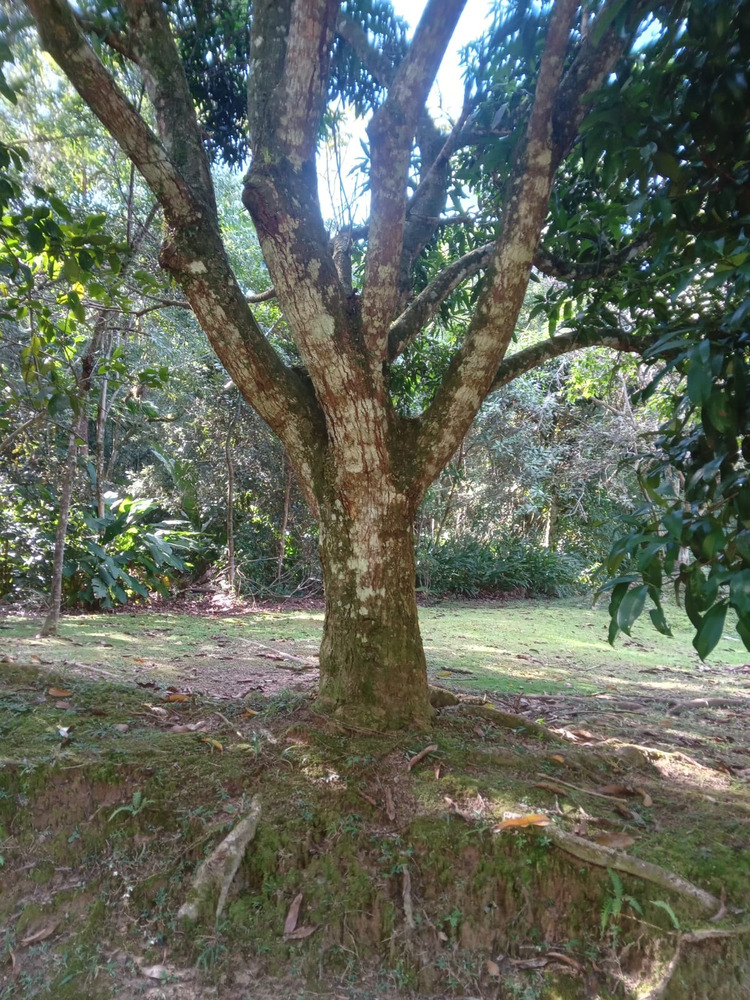
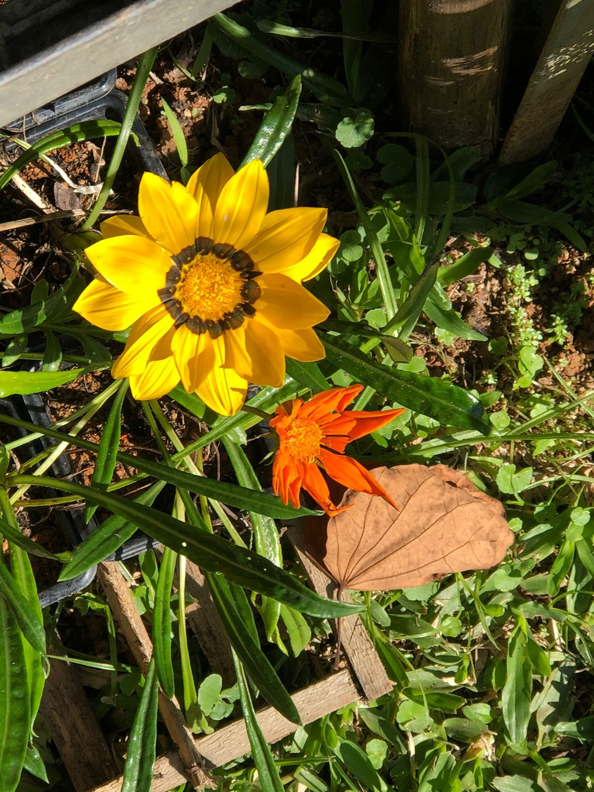
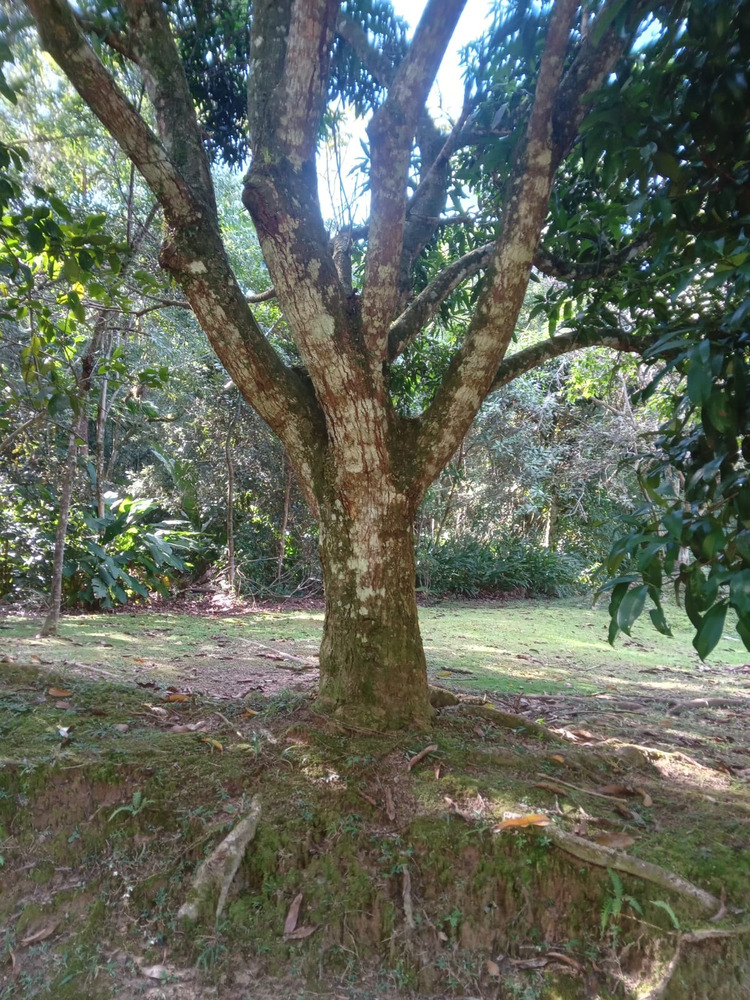
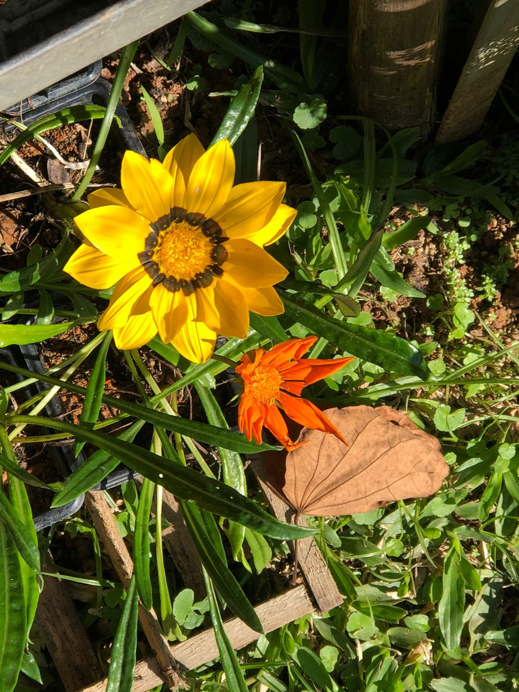
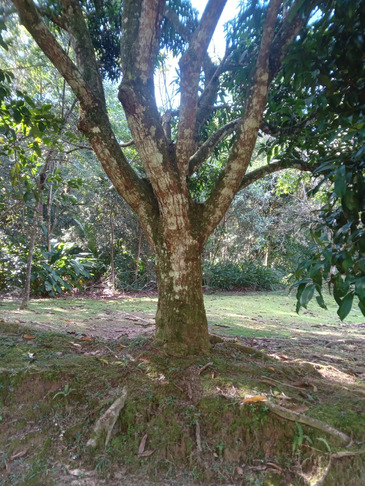
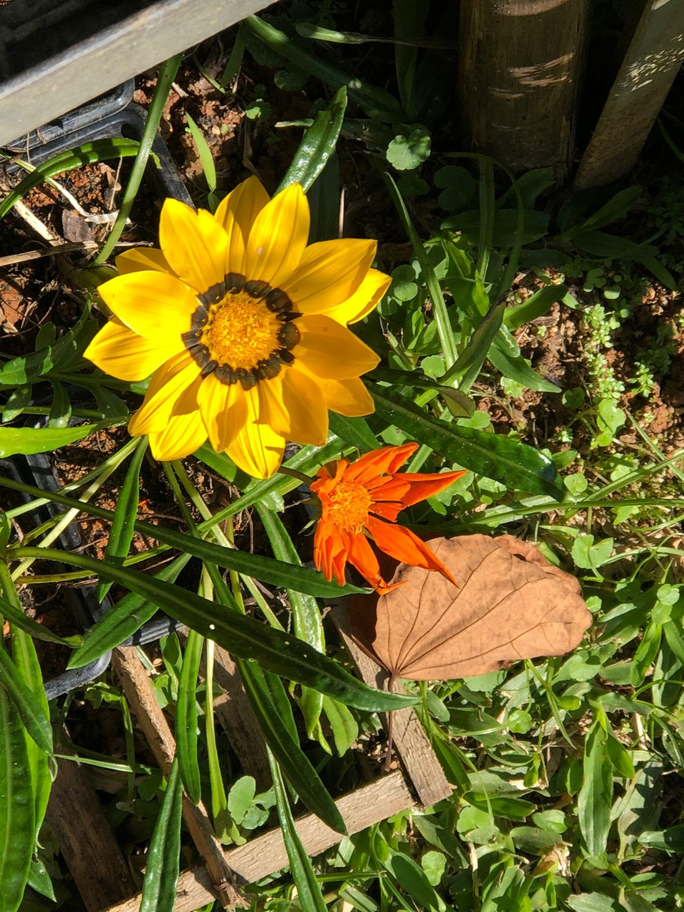

Há alguns anos, encontrei pedras estranhas cobertas de musgo. Tinham um formato curioso, levemente curvado. Quando levantei um pouco da camada de musgo, descobri que, na verdade, eram cascas de árvores. Ou seja, não eram pedras, mas madeira velha. Em solo úmido a madeira de faia apodrece em poucos anos, por isso fiquei surpreso ao constatar como aqueles pedaços eram duros. Pareciam presos ao solo. Usei um canivete para raspar um pouco da casca e revelei uma camada verde. Essa cor só aparece quando há clorofila, que existe nas folhas frescas e é armazenada nos troncos das árvores vivas. Os pedaços de madeira não estavam mortos. Logo depois notei que as outras “pedras” formavam um círculo, uma imagem surgiu na minha cabeça: eram os restos de um tronco de árvore gigantesco.
Toda a parte interna já havia virado húmus, um claro indício de que o tronco provavelmente foi derrubado há 400 ou 500 anos. Mas como aquelas sobras ficaram tanto tempo vivas? Afinal, suas células precisam receber nutrientes (na forma de açúcar), respirar e crescer. Sem folhas isso é impossível, pois elas não conseguiriam realizar a fotossíntese. Nenhum ser vivo aguenta séculos de jejum, e isso também vale para restos de árvores. No entanto, estava claro que aquele exemplar provava o contrário. Através das raízes, recebia ajuda das árvores vizinhas. Pode ser apenas uma ligação remota por meio de redes de fungos que recobrem as pontas das raízes e promovem a troca de nutrientes entre os exemplares, mas também há casos em que as raízes em si estão conectadas. As faias vizinhas mantinham o resto de tronco vivo bombeando açúcar para o que restava da árvore.
Às vezes, vemos em barrancos como as raízes das árvores são emaranhadas, uma cadeia de montanhas, descobriram que a maioria dos indivíduos de uma espécie e de uma população é interligada por um sistema entremeado de raízes. É normal que elas troquem nutrientes e ajudem as vizinhas em casos de emergência, e isso nos faz concluir que as florestas são superorganismos, formações semelhantes, a um formigueiro. Também podemos nos perguntar se as raízes das árvores simplesmente não cresceriam de forma aleatória e se conectariam ao encontrar outras da mesma espécie. Segundo essa hipótese, a partir desse acaso não teriam outra escolha a não ser trocar nutrientes, formar uma comunidade e ter uma relação na qual ocasionalmente forneceriam e receberiam nutrientes. Nesse caso, a bela imagem de que as árvores se ajudam de maneira ativa seria desfeita pelo princípio do acaso, embora mesmo esses mecanismos ofereçam vantagens para o ecossistema da floresta. Mas a natureza não funciona de forma tão simples.
As plantas e, portanto, as árvores conhecem muito bem as diferenças entre suas raízes e as de outras espécies e até as de outros exemplares da mesma espécie. Por que as árvores são seres tão sociais? Por que compartilham seus nutrientes com outras da mesma espécie e, com isso, ajudam suas concorrentes? Os motivos são os mesmos que movem as sociedades humanas: trabalhando juntas elas são mais fortes. Uma única árvore não forma uma floresta, não produz um microclima equilibrado; fica exposta, contra o vento. Por outro lado, muitas árvores juntas criam um ecossistema que atenua o excesso de calor e de frio, armazena um grande volume de água e aumenta a umidade atmosférica – ambiente no qual as árvores conseguem viver protegidas e durar bastante tempo.
Se todos os espécimes só cuidassem de si, grande parte morreria cedo demais. Com isso, as tempestades penetrariam a floresta com mais facilidade e poderiam derrubar outras árvores. O calor do verão ressecaria o solo. Todos os espécimes sofreriam. Assim, cada árvore é valiosa para a comunidade e deve ser mantida viva o máximo de tempo possível. Mesmo os espécimes doentes recebem ajuda e nutrientes até ficarem curados. E uma árvore que no passado auxiliou outra pode no futuro precisar de uma mãozinha. Quando as enormes faias seu comportam dessa forma, somente alguns espécimes são mantidos vivos através dos séculos, como a “pedra com musgo”. E por que elas se diferenciam dessa forma? As árvores se organizam em uma sociedade de classes, mas a expressão “classe” não é a mais exata. Acima de tudo, a decisão de ajudar os colegas depende muito mais do nível de proximidade ou afinidade entre os exemplares envolvidos.
É possível compreender isso olhando para a copa das árvores. Uma árvore normal estende seus galhos até alcançar a altura da ponta dos galhos de uma vizinha do mesmo tamanho. Não vai além disso porque o espaço já está ocupado. Depois, fortalece os galhos que expandiu, e a impressão é de que existe uma verdadeira briga lá em cima. No entanto, desde o início um par de árvores amigas de verdade cuida para que nenhum galho grosso demais se estenda na direção da outra. Elas não desejam tirar nada uma da outra, por isso só engrossam os galhos e os esticam na direção das “não amigas”. Talvez todas as espécies façam isso, pois, além das faias, já encontrei tocos de carvalhos e douglásias mantidos vivos por outros espécimes próximos. Já as florestas plantadas se comportam de maneira mais individualista. Como são plantadas, suas raízes são danificadas de forma permanente e parecem nunca se encontrar para formar as redes. Em geral, as árvores plantadas se comportam como indivíduos solitários, por isso enfrentam muitas dificuldades e na maioria dos casos nem envelhecem – dependendo da espécie, seus troncos são considerados maduros para serem derrubados aos 100 anos.
Não seria interessante descobrir que as árvores também podem se expressar? Os galhos rangem e estalam ao entrar em atrito uns com os outros, e as folhas farfalham, mas esses sons são causados pelo vento, não dependem de ações delas. Acontece que as árvores marcam sua presença de outra forma: por meio dos odores que exalam.
Dessa forma, quando uma lagarta morde com vontade, o tecido da folha danificada se altera e ela envia sinais elétricos, da mesma forma que acontece com o corpo humano. No entanto, esse impulso não se espalha em milissegundos, como no nosso caso, mas a apenas um centímetro por minuto. Por isso demora até uma hora para que a substância defensiva chegue às folhas e acabe com a refeição da praga. Por exemplo, se as raízes estiverem em dificuldade, a informação se espalhará pela árvore, que liberará uma substância especial pelas folhas.
No entanto, as substâncias odoríferas têm uma desvantagem: elas se dispersam rapidamente com o vento, em geral só são detectadas a, no máximo, cem metros da árvore que a emitiu. Para contornar essa limitação, elas enviam mensagens também pelas raízes, que as conectam e não dependem do clima para funcionar bem. Recentemente uma pesquisa chegou à surpreendente conclusão de que os alertas são espalhados não apenas por meios químicos, mas também eletricamente, a um centímetro por segundo. No entanto, esse contato não acontece em todos os casos, pois na floresta também há árvores solitárias, que não querem se relacionar com as outras. Ele transmite sinais de uma árvore para outra e as ajuda a trocar notícias sobre insetos, secas e outros perigos.
O texto aborda a comunicação entre as árvores por meio de sinais químicos e elétricos, revelando que elas possuem uma forma de expressão própria. Por exemplo, quando girafas se aproximam de acácias para se alimentar, as árvores liberam toxinas em resposta, além de emitirem um gás de alerta para as árvores vizinhas, sinalizando perigo. Essa comunicação também ocorre em outras florestas, onde as árvores detectam ataques de insetos e liberam substâncias para atrair predadores naturais dessas pragas. Além dos sinais químicos, as árvores também podem se comunicar por meio de sinais elétricos transmitidos pelas raízes, que se conectam umas às outras. Fungos presentes no solo desempenham um papel importante nessa comunicação, formando uma rede semelhante à internet, por onde as árvores compartilham informações sobre insetos, secas e outros perigos. No entanto, quando as árvores estão enfraquecidas ou não conseguem se comunicar, tornam-se vulneráveis a ataques de insetos. Por outro lado, as árvores também se comunicam de maneira positiva, como quando enviam sinais atrativos através das flores para atrair polinizadores, como as abelhas.
Embora que as árvores sejam consideradas silenciosas, estudos mais recentes indicam a possibilidade de que elas também possam emitir e detectar ondas sonoras. As árvores possuem formas fascinantes de se expressar e se comunicar. Embora não produzam sons ativamente, como os rangidos dos galhos ou o farfalhar das folhas, elas se comunicam através dos odores que exalam. Quando uma lagarta danifica uma folha, as árvores enviam sinais elétricos semelhantes aos impulsos do corpo humano, mas que se propagam lentamente, a apenas um centímetro por minuto. Esses sinais desencadeiam a produção de substâncias defensivas que chegam às folhas em até uma hora, interrompendo a alimentação da praga.
As árvores têm a capacidade de produzir diferentes substâncias que as ajudam a identificar os agressores e até mesmo reconhecer a saliva das pragas, sugerindo que elas possuem uma espécie de paladar. Embora as substâncias odoríferas se dispersam rapidamente pelo vento e geralmente são detectadas a no máximo cem metros da árvore emissora, as árvores também se comunicam pelas raízes, formando uma rede subterrânea que permite a troca de informações mesmo sem depender do clima.
O capítulo 3 do livro trata sobre a questão da competição entre árvores e como isso afeta o seu crescimento. Enquanto no contexto das florestas comerciais, as árvores são espaçadas e podadas periodicamente para incentivar o crescimento rápido dos troncos, no caso de árvores da mesma espécie, a situação é diferente.
As árvores da mesma espécie, como as faias, têm a capacidade de estabelecer conexões e compartilhar recursos entre si. Por meio de uma sincronização, todas as árvores da floresta têm o mesmo rendimento na fotossíntese, mesmo ocupando lugares com diferentes condições de solo e ambiente. Essa igualdade de rendimento ocorre devido a uma troca ativa de nutrientes e água entre as raízes, mediada por fungos que formam uma rede de redistribuição de energia.
Contrariando a ideia de que a proximidade entre as árvores é prejudicial ao seu crescimento, as faias gostam de ficar próximas umas das outras. A pesquisa mostrou que florestas de faias em que os membros estão próximos são mais produtivas, com um crescimento maior de biomassa, especialmente de madeira. Isso se deve à otimização da divisão de nutrientes e água, permitindo que cada árvore se desenvolva da melhor forma possível.
No entanto, quando o homem interfere tentando eliminar a suposta competição entre as árvores da mesma espécie, deixando algumas árvores isoladas, ocorrem grandes diferenças de produtividade entre os indivíduos. As árvores solitárias não recebem mais ajuda das vizinhas e passam a cuidar apenas de si, o que pode levar a problemas de saúde e maior vulnerabilidade a insetos e fungos. Além disso, a comunidade das árvores como um todo é afetada, pois a qualidade da árvore depende da floresta que a cerca.
O ritmo lento que regula a vida das árvores também fica evidente no momento em que vão se reproduzir, pois para isso elas se planejam com, no mínimo, um ano de antecedência. Cada espécie tem uma forma de funcionamento. Assim, algumas florescem toda primavera enquanto outras não. Árvores de floresta gostam de florescer todas ao mesmo tempo, pois assim seus genes podem se misturar bem. O volume é tão grande que, na época do florescimento, a menor brisa levanta nuvens de poeira colossais sobre as florestas de coníferas, dando a impressão de que está havendo um incêndio debaixo das copas e a fumaça está subindo.
Com uma situação tão caótica, surge a pergunta: é possível evitar a reprodução consanguínea (entre indivíduos com algum grau de parentesco)? A resposta é que as árvores sobreviveram até hoje porque apresentam uma grande diversidade genética dentro da mesma espécie. Quando todas liberam o pólen ao mesmo tempo, os minúsculos grãos dos espécimes se misturam e atravessam a copa de todas as árvores. Por outro lado, como o pólen se concentra muito em volta da própria árvore que o gera, há uma grande chance de que as flores femininas sejam fecundadas pelo pólen masculino do mesmo espécime Flores masculinas e femininas florescem com intervalo de alguns dias para que a maior parte das femininas seja polinizada por outras árvores da espécie.
Já a cerejeira tem os órgãos reprodutores masculino e feminino na mesma flor, por isso não conta com essa possibilidade. Além disso, é uma das poucas espécies genuinamente florestais que se deixam polinizar por abelhas. No entanto, a cerejeira é sensível e pressente o risco de consanguinidade. Quando um grão de pólen entra em contato com o estigma da flor (parte terminal do gineceu que capta os grãos de pólen e onde depois eles germinam), seus genes são ativados, e um tubo se estende até o ovário, em busca de um óvulo.
Se a cerejeira descobrir que o pólen é dela própria, ela bloqueia o tubo, que acaba se atrofiando. Só o material genético vindo de outros espécimes e que parece capaz de realizar uma boa fecundação tem passagem liberada para formar sementes e frutos. Mas como a árvore consegue distinguir se o material genético é dela? Até hoje não se tem certeza. Sabe-se apenas que os genes são ativados pelo pólen de outros espécimes e só com isso ele consegue passar. Pode-se dizer que a árvore consegue sentir. O mesmo vale para nós, seres humanos. O sexo significa mais do que a simples liberação de substâncias químicas, que por sua vez ativam a secreção corporal. De qualquer modo, o que a árvore vivencia durante a reprodução é algo que permanecerá por muito tempo apenas no campo das especulações.
Como a árvore é capaz de realizar esse feito se ambos os sexos florescem ao mesmo tempo? Cientistas descobriram que o salgueiro exala um odor que atrai as abelhas. Quando os insetos se aproximam da árvore, podem se orientar pela visão. Por isso, o macho faz um grande esforço para que seus amentos (um tipo de inflorescência densa e pêndula que lembra a cauda de um gato) ganhem uma coloração amarela viva. Isso chama a atenção das abelhas primeiro para eles. Quando os insetos se alimentam do açúcar, vão embora e visitam as flores verdes e nada atraentes das fêmeas.
Ao examinar as faias jovens, deparei-me com um galho de 20 centímetros que exibia 25 pontos de engrossamento. Nesse pequeno trecho, não havia mais indicações sobre a idade da árvore. No entanto, ao projetar a idade total da árvore com base na idade do galho, concluí que ela devia ter pelo menos 80 anos. É interessante observar que as árvores jovens têm um desejo de crescimento acelerado. Para elas, não há problema em estender-se meio metro por estação. No entanto, as mães não são muito favoráveis a essa ideia. Elas cobrem as mudas com suas imensas copas e, com a ajuda de outras árvores adultas, formam um dossel denso sobre a floresta, permitindo a passagem de apenas 3% da luz solar. Essa parcela mínima incide sobre o solo ou as folhas de suas filhas. Três por cento - uma quantidade praticamente insignificante. Além disso, as árvores jovens não possuem energia suficiente para se rebelar contra essa educação rigorosa.
A forma de educar adotada pelas mães consiste em limitar a incidência de luz nas árvores jovens. Isso ocorre porque os pais não estão tentando impedir que sua prole alcance a independência o mais rápido possível. Na verdade, pesquisas demonstram que o crescimento lento das árvores jovens é um requisito fundamental para que elas atinjam uma idade avançada. Infelizmente, muitas vezes perdemos a noção do que é considerado realmente antigo, pois na silvicultura moderna, as árvores geralmente são derrubadas entre 80 e 120 anos - período em que são plantadas e utilizadas.
No entanto, chega o momento em que a espera termina. A mãe atinge sua idade-limite ou adoece. Nesse momento, uma tempestade de verão pode pôr fim a essa história. Sob a intensa chuva, o tronco deteriorado não consegue mais suportar o peso das toneladas de sua copa e se parte. Quando isso ocorre, algumas das mudas que aguardavam para crescer acabam sendo destruídas. A abertura resultante no dossel de folhas funciona como um sinal para as árvores jovens que sobreviveram à queda da mãe, pois agora elas podem realizar a fotossíntese em pleno vapor. Consequentemente, o metabolismo precisa se adaptar, e elas começam a desenvolver folhas e agulhas capazes de receber e processar a luz mais intensa. Esse processo ocorre durante um período que varia de um a três anos. Após o término desse período de formação, todas as árvores jovens desejam iniciar seu crescimento, mas somente aquelas que se elevarem diretamente para cima e sem hesitar permanecerão na competição. Qualquer árvore que crescer lateralmente ou demorar a se erguer será ultrapassada pelas outras e retornará à sombra. A diferença é que elas ficarão sob as folhas das mudas que as superaram, onde a escuridão é ainda mais densa do que antes
As árvores se importam com a beleza? Não sei, mas existe um bom motivo para buscarem a aparência ideal: estabilidade. As grandes copas das árvores adultas ficam expostas a ventanias, tempestades e nevascas. A árvore precisa amortecer o impacto dessas forças e conduzi-las através do tronco até as raízes, que devem conter a maior parte da energia para impedir que a árvore tombe. Para isso, a raiz se agarra ao solo e às pedras. Se a árvore tiver algum ponto fraco, ele pode se transformar em uma fissura e, em casos mais graves, quebrar o tronco. As árvores estáveis atenuam esse impacto de maneira uniforme, dissipando-o e distribuindo-o por sua estrutura. No entanto, quem não segue o manual de etiqueta tem dificuldades. Se o tronco estiver curvado, por exemplo, terá problemas durante a hibernação. O enorme peso da copa não será bem distribuído pelo diâmetro do tronco e acabará pressionando apenas um lado da madeira. Para que o tronco não dobre, a árvore terá que fortalecer esse lado. Quando precisar se valer desse mecanismo, surgirão anéis especialmente escuros no tronco (nos pontos onde armazena menos ar e mais substâncias).
A situação das árvores de tronco bifurcado, ou em forquilha, é ainda pior. Quando bate um vento forte, as partes, cada uma com sua copa, balançam e forçam o ponto de bifurcação. Se ele tiver a forma de U, normalmente não há problema, e nada acontece, mas se a forquilha for em forma de V podem surgir complicações, pois o ponto de convergência será muito pontudo, e não dará uma base de sustentação larga o suficiente para que a árvore suporte a força do vento. No entanto, em geral essa tática é inútil, e o ponto de quebra passará a vazar continuamente um líquido que ganha uma coloração preta por causa das bactérias. Para piorar, a água começa a penetrar a fissura e provoca apodrecimento. Por isso, no caso de muitas forquilhas, quando a árvore se parte ao meio a metade mais estável permanece em pé. Essa meia árvore sobrevive no máximo algumas décadas. A ferida imensa e aberta não tem mais cura, e lentamente os fungos começam a devorá-la de dentro para fora.
Em certos lugares com inverno rigoroso, a neve costuma atingir alguns metros de altura, e sempre há deslizamentos. Com isso, acaba curvando as árvores, ao menos as mais jovens. No caso das menores, isso não é uma tragédia, pois elas voltam a se aprumar depois do derretimento da neve e não sofrem ferimento algum. No entanto, nas de crescimento médio, o tronco é danificado ou, no pior dos casos, fica retorcido ou até se quebra. A partir de então tentam crescer verticalmente, mas, como crescem a partir da ponta superior, a base permanece na mesma posição. No inverno seguinte, a árvore é entortada outra vez pela neve, mas quando cresce é em linha reta. Se isso se repetir por muitos anos, aos poucos a árvore é moldada e ganha o formato de um sabre. Só com o passar do tempo o tronco engrossa o bastante e fica tão estável que a neve não consegue mais danificá-lo. Com isso, a parte torta inferior permanece curva, enquanto a superior fica reta como nas árvores normais.
Nos limites da floresta, a regra que dita o crescimento reto dos troncos perde força. Ao contrário do que acontece no centro da floresta, a luz também incide de lado, atravessando qualquer local sem árvore, como uma pradaria ou um lago. Dessa forma, árvores menores podem sair de baixo das grandes e crescer na direção do terreno aberto. As frondosas podem curvar seu tronco e deslocar sua copa em até 10 metros, inclinando o broto principal de maneira quase horizontal. Claro que, com esse movimento, a árvore corre o risco de quebrar numa nevasca. No entanto é melhor uma vida curta mas com luz suficiente para a reprodução do que não viver. Enquanto a maioria das árvores frondosas aproveita a oportunidade, grande parte das coníferas é teimosa: só cresce diretamente para cima e em linha reta, contra a gravidade, formando um tronco perfeito e estável. Somente os galhos laterais às margens da floresta podem ficar mais grossos e longos com a incidência da luz. O pinheiro é a única conífera que desloca a copa. Não surpreende que, entre esse grupo de espécies, seja a que apresenta a maior taxa de rompimento sob o peso da neve.
As árvores enfrentam um desafio maior ao lidar com a sede do que com a fome. Embora sejam capazes de obter alimento através da fotossíntese a qualquer momento, as árvores não conseguem produzir nutrientes sem a presença de umidade. Em um único dia, uma faia adulta consegue captar mais de 500 litros de água, absorvendo-a através dos galhos e das folhas, desde que seja capaz de extrair essa água do subsolo. No entanto, durante o verão europeu, a umidade do solo se esgota rapidamente se as árvores extraíssem água do subsolo todos os dias. Nessa época, as chuvas não são suficientes para encharcar um solo ressecado. É por isso que as árvores desenvolveram uma estratégia de armazenamento de água durante o inverno, quando ocorre um volume de chuvas muito maior do que o necessário na Europa Central. Durante essa estação, quase todas as plantas interrompem seu crescimento, o que significa que a árvore praticamente não consome água nesse período.
Nesse contexto, a água desempenha um papel fundamental na vida das árvores. É um recurso precioso, mas também escasso em certos momentos e lugares. As árvores desenvolveram mecanismos sofisticados para captar, armazenar e utilizar a água de forma eficiente, garantindo sua sobrevivência e crescimento. É uma luta constante, uma dança entre a sede e a saciedade, em que as árvores buscam um equilíbrio delicado para prosperar em seu ambiente natural
As árvores são muito sociáveis e ajudam umas às outras, mas isso não basta para sobreviverem bem no ecossistema da floresta. Cada espécie tenta ganhar espaço, reprimindo outras, no fim das contas é a luta pela água que decide a vencedora. As raízes. Formam uma penugem fina que retém o máximo possível de água. Porém, quanto mais puderem captar, melhor. Por essa razão, fizeram um acordo com os fungos. Aqui, porém, vamos nos ater às relações amistosas entre fungos e árvores. Para encontrar um fungo com um micélio adequado às suas raízes ela pode multiplicar sua superfície de raiz e captar muito mais água e nutrientes. A planta passa a receber o dobro de nutrientes fundamentais para fazer parceria com um dos milhares de espécies de fungo, árvore precisa ser muito aberta os filamentos do fungo penetram as partes finas e macias da árvore. A partir daí eles trabalham em parceria. O fungo penetra e cerca a raiz da árvore e expande sua rede pelo solo do entorno, cresce na direção de outras árvores e se conecta com fungos parceiros e as raízes às quais estão ligados.
Dessa forma surge toda uma rede de troca de nutrientes, os fungos são como a internet da floresta. E essa ligação também é necessária para eles, pois dependem de nutrientes de outras espécies, pagamento em forma de açúcar e outros carboidratos. Primeiro ouvem o que a árvore tem a dizer por meio de suas estruturas subterrâneas. Se concluírem que a árvore é útil, começam a produzir hormônios que orientam o crescimento celular do vegetal de maneira favorável a eles. Para obter açúcar, o fungo oferece filtragem de metais pesados, O pacote dos fungos também oferece serviços de saúde – o micélio combate espécies intrusas, inclusive ataques de bactérias ou outros fungos.
Fungos e árvores podem viver séculos em parceria. Muitas espécies buscam a árvore adequada e, assim que a encontram, se unem a ela para o que der e vier, não importa se vão se ligar a um carvalho, uma faia ou um abeto, o importante é haver espaço livre debaixo da árvore. As tramas formadas pelos micélios se ligam a árvores de diversas espécies. Embora muitas espécies de árvores travem lutas mortais e tentem reprimir umas às outras até nas raízes, os fungos parecem mais preocupados com o equilíbrio da floresta. É fato que as diferentes espécies de árvore lutam umas contra as outras, supondo que as faias possam alcançar a vitória na maioria das florestas, isso seria mesmo uma vantagem para o fungo? O que aconteceria se, um novo agente patogênico matasse a maioria das faias? Não seria mais vantajoso haver um certo número de outras espécies? Dessa forma carvalhos, bordos, freixos e pinheiros continuariam existindo, crescendo e fornecendo as sombras sob as quais uma nova geração de faias poderia germinar e se desenvolver, apoiando as “perdedoras” e evitando seu desaparecimento completo. Já apresentei os ajudantes mais importantes das árvores, mas ainda há uma série de outros. Por exemplo, o pica-pau. Esta ave não chega a ser uma colaboradora de fato. Por exemplo, sempre que um besouro escotilíneo ataca as faias, elas correm risco, e insetos se multiplicam com tanta rapidez que podem matá-la em pouco tempo, pois se alimentam do câmbio da árvore. Se um pica-pau da espécie Dendrocopos major descobre o banquete, voa rapidamente até o lugar, sobe pelo tronco e, assim como um pica-boi nas costas de um ruminante, se alimenta das larvas, arrancando-as com o bico. Quando a árvore não sobrevive, outros espécimes da espécie ficam protegidos, O pica-pau não está nem um pouco interessado no bem-estar da árvore, o que é nítido pelas cavidades onde fazem seus ninhos.
Como a água sobe do solo até as folhas? Essa pergunta simboliza nosso estado atual de conhecimento científico sobre a floresta. O transporte de água é um fenômeno mais simples de pesquisar do que a dor ou a comunicação entre as árvores. A resposta para essa pergunta envolve a capilaridade e a transpiração. A capilaridade é a propriedade física que faz o líquido subir no máximo 1 metro nos tubos mais finos. É como quando observamos o café da manhã, onde o líquido fica acima da borda da xícara cheia. Essa força capilar é evidente em recipientes estreitos, permitindo que o líquido suba contra a força da gravidade. No entanto, a capilaridade não é suficiente para explicar como a água alcança a copa das árvores a mais de 100 metros de altura. É aí que entra a transpiração. As folhas transpiram, produzindo uma sucção que puxa um suprimento constante de água para cima pelos sistemas condutores da árvore. É um processo contínuo, onde as moléculas de água se ligam umas às outras, puxando-se mutuamente para cima pelos sistemas internos das árvores. Além disso, a osmose também desempenha um papel importante. Quando a concentração de açúcar em uma célula é maior do que a da célula vizinha, a água flui através das paredes, buscando equilibrar a concentração.
Esse processo ocorre de célula em célula até chegar à copa da árvore, permitindo que a água suba. No entanto, mesmo considerando a capilaridade, a transpiração e a osmose, ainda há partes do transporte de água nas árvores que permanecem um mistério. Recentemente, cientistas descobriram um fenômeno intrigante: um leve chiado dentro das árvores, especialmente à noite, quando a água está no tronco. Esse chiado é causado por pequenas bolhas de dióxido de carbono que se formam nos tubos estreitos cheios de água. Essas bolhas interrompem a via de água, diminuindo a contribuição da transpiração, força de coesão e forças capilares no transporte. Assim, apesar dos avanços em nossa compreensão, o transporte de água nas árvores ainda é um mistério complexo. As explicações envolvendo a capilaridade, transpiração e osmose são apenas peças do quebra-cabeça, deixando muitas perguntas sem resposta. A cada descoberta, nos aproximamos de um novo mistério, alimentando ainda mais nossa curiosidade sobre a vida secreta das árvores.
A pele é uma barreira que protege nosso interior do mundo exterior, é sensível a toques, que podem ser agradáveis ou causar dor e, com isso provocar uma reação defensiva. Ela não se mantém sempre firme, como na juventude, e com o passar do tempo essa complexa estrutura se torna cada vez mais flácida. Como resultado, surgem rugas e dobras, que “entregam” nossa idade aproximada. O necessário processo de renovação da pele não é nada prazeroso: por dia, cada pessoa perde cerca de 1,5 grama em escamas de pele. Em um ano, chega-se a mais de meio quilo. Mas pode ser ainda mais impressionante: por dia perdemos 10 bilhões de partículas de pele. Não parece um processo muito atraente, mas ele é necessário para manter nosso órgão superficial em boas condições.
No caso das árvores, o processo é semelhante: a casca, cumpre exatamente a mesma função que tem a pele humana: protege os órgãos internos do mundo exterior. Sem casca, a árvore ressecaria e poderia sofrer ataques de fungos, que na madeira úmida e saudável não têm chance alguma, mas podem destruir a madeira um pouco mais ressecada. Os insetos também precisam de níveis mais baixos de umidade, portanto não têm chance caso a casca esteja intacta. Percentualmente a árvore contém quase tanto líquido quanto o corpo humano, por isso não desperta o interesse de parasitas, que literalmente morreriam afogados. Ou seja: para a árvore, um buraco na casca é tão incômodo quanto um ferimento na nossa pele. Por ano, um espécime repleto de seiva aumenta de 1,5 a 3 centímetros em diâmetro. Em tese isso bastaria para a casca se romper. Para evitar que isso aconteça, as árvores também renovam a pele perdendo uma enorme quantidade de escamas, que têm tamanho proporcional à estatura da árvore. No entanto, nem toda árvore descasca da mesma forma. Quando elas envelhecem, as rugas começam a surgir de baixo para cima e se aprofundam com o passar do tempo. A velocidade do processo depende da espécie. Ou seja, quanto mais profundas as rugas, mais lenta é a espécie para realizar esse processo. Como se quisesse exibir a ferida, a árvore começa a permitir a proliferação de musgo nas fendas, onde a água da chuva fica retida por mais tempo e proporciona a umidade necessária ao desenvolvimento do musgo. Dessa forma, para estimar a idade das matas de faias basta olhar para a cobertura verde nos troncos: quanto mais houver, mais antigas serão. Mais uma vez as árvores exibem características humanas. Mais luz, mais sol, mais raios ultravioleta (que envelhecem a pele humana e, ao que parece, a das árvores). Nesse sentido, é importante ressaltar que a cortiça do lado voltado para o sol é mais dura –portanto, menos flexível e mais propensa a descolamento. No entanto, essas alterações também podem ser apenas “doenças de pele”. Assim como na puberdade a acne pode causar cicatrizes permanentes, um ataque de piolhos de casca de árvore pode marcar o tronco de forma definitiva. Não é apenas no ser humanos que a pele é um espelho da alma (ou do bem-estar).
O musgo havia sido colonizado por cianobactérias, que captavam nitrogênio do ar e o convertiam para que as árvores pudessem absorvê-lo. A chuva leva fertilizante natural pelo tronco até o solo e o põe à disposição das raízes. Dessa forma, as árvores antigas fertilizam a floresta e, com isso, ajudam a prole a ter um começo de vida mais auspicioso. Além das rugas e do crescimento de musgo, outras alterações físicas mostram a idade das árvores. Por exemplo, na copa: dependendo da espécie, entre os 100 e os 300 anos os brotos começam a nascer mais curtos e em quantidade cada vez menor. Em árvores frondosas, a sobreposição desses brotos provoca o crescimento de galhos curvados como garras, que lembram mãos reumáticas. De qualquer forma, em algum momento toda árvore para de crescer em altura. Suas raízes e seu sistema vascular não conseguem bombear água e nutrientes para cima, o esforço seria grande demais. Em vez disso, ela passa a engrossar cada vez mais (outro paralelo com seres humanos em idade avançada). No entanto, ao longo dos anos vai perdendo a força e, com isso, não consegue mais alimentar os galhos mais altos, que começam a morrer.
Então, como os idosos humanos, as árvores vão perdendo altura. As tempestades levam os galhos mortos da copa e, depois dessa limpeza, por um período curto, a árvore volta a parecer nova. Esse processo se repete todo ano, diminuindo a copa de forma quase imperceptível. Eles também morrem, mas não caem com tanta facilidade. Nesse estágio, a árvore já não é mais capaz de esconder sua idade avançada nem sua decadência. Nesse período, talvez até antes, sua casca volta a chamar atenção, pois seus ferimentos pequenos e úmidos se transformam em porta de entrada para fungos, que “comemoram” sua vitória produzindo frutos exuberantes em formato de semicírculo que se aderem ao tronco e crescem ano após ano. No interior da árvore, os fungos, dependendo da espécie, devoram os compostos de açúcar depositados ou, pior, a celulose e a lignina. Com isso, decompõem o esqueleto da árvore. Por um tempo, isso ajuda a árvore em deterioração a aguentar as fortes tempestades de inverno. No entanto, chega o dia em que o tronco quebra e a árvore morre. “Finalmente”, parecem dizer as árvores jovens e esperançosas, que nos anos seguintes começarão a crescer ao lado do toco da árvore caída, que mesmo morta tem uma função na floresta, pois seu cadáver em putrefação ainda desempenhará um papel importante no ecossistema durante séculos.
Quando passeio pela nossa reserva, sempre vejo carvalhos doentes, às vezes sofrendo bastante. Um sinal claro são os “galhos ladrões” que nascem em volta do tronco e em geral ressecam rapidamente. O carvalho é uma árvore que precisa de muita luz para realizar a fotossíntese. Os carvalhos das florestas da Europa Central passam por dificuldades, pois essa é a terra natal da faia, espécie de árvore socialmente bem desenvolvida, porém apenas ao lidar com outras da mesma espécie. O processo começa de forma lenta e inofensiva: um gaio enterra um fruto de faia aos pés de um poderoso carvalho.
Como o fruto tem reservas de nutrientes, permanece inativo e germina na primavera seguinte. A partir daí cresce lenta e sorrateiramente durante muitas décadas. Embora sinta falta da árvore-mãe, pelo menos a jovem faia conta com a sombra do carvalho, que contribui para que a muda cresça devagar e com saúde. Depois de 150 anos, a faia cresceu tanto que aos poucos entremeia a copa do carvalho. Em algumas décadas, ultrapassa-a, pois, ao contrário do carvalho, a faia é capaz de ampliar a copa e crescer praticamente a vida inteira. A essa altura as folhas da faia já recebem luz direta do sol, e a árvore absorve uma quantidade grande de energia e pode se alargar. O carvalho fica em segundo plano, abaixo da faia, onde suas folhas buscam em vão a luz. Sua produção de açúcar diminui de maneira drástica, as reservas são exauridas e, aos poucos, a árvore morre de fome. Desesperado, o carvalho toma uma atitude que vai contra todas as regras de etiqueta da floresta: forma galhos e folhas na parte inferior do tronco. Os galhos secam, e a valiosa energia restante da árvore é gasta inutilmente. Nesse estágio de fome, o carvalho ainda resiste por algumas décadas, mas em dado momento desiste. Na maioria das florestas o carvalho de fato é subjugado pela faia, mas quando não tem concorrência ele é muito bem-sucedido – por exemplo, em espaços abertos, mais especificamente em terras cultivadas.
Uma ferida profunda no tronco ou uma fenda aberta por um raio não prejudicam um carvalho, pois sua madeira é permeada de substâncias inibidoras de fungos, os taninos, que inibem o processo de decomposição e repelem a maioria dos insetos. Na nossa reserva o carvalho também prova como é extremamente resistente a condições inóspitas. Quando o calor do verão esquenta as rochas a ponto de ficar insuportável, a pouca água do local evapora. No inverno, a geada penetra fundo, pois ali não existe a proteção de uma camada grossa de terra forrada por uma cobertura alta de folhas em decomposição
As árvores podem crescer em ambientes extremos. Na verdade, podem não ter alternativa, pois, quando a semente cai, somente o vento e algum animal podem mudar sua localização. Quando germinar na primavera, sua sorte está lançada. A partir de então, a muda está ligada para o resto da vida àquele pedaço de terra e precisará aceitá-lo. Ou a própria faixa pode germinar num local desprotegido, claro demais, e ter sua folhagem sensível queimada pelo sol escaldante. O solo pantanoso causa a decomposição da raiz da maioria das espécies, enquanto a areia seca a mata de sede. Entre os piores lugares para brotar estão os terrenos sem solo nutritivo, como os rochedos ou mesmo as forquilhas de árvores grandes.
No primeiro verão extraordinariamente seco, a pouca umidade que restava na madeira morta do toco evapora, e o broto seca. Para muitas espécies europeias os critérios de localização ideal são iguais – um solo rico em nutrientes, arenoso e com muitos metros de profundidade. Também deve ser bem úmido, sobretudo no verão. Não pode esquentar demais no verão nem esfriar demais no inverno. A precipitação de neve deve ser apenas moderada, mas em quantidade que encharque o solo ao derreter. As tempestades de outono devem ser atenuadas por uma encosta de montanha, e a floresta não deve ter muitos fungos e insetos que atacam a casca e a madeira. Esse seria o paraíso das árvores. Mas, exceto por pequenas extensões de terra, essas condições ideais não existem.
E o que acontece quando a árvore é serrada? Ela morre? Deixa de ser uma O que é exatamente uma árvore? Segundo o dicionário, é um vegetal lenhoso de caule principal ereto e indiviso (o tronco). Ou seja, o broto principal precisa ser dominante e crescer continuamente para cima, do contrário a planta é considerada um arbusto, com diversos troncos curtos ou finos (galhos) a partir de um talo de raiz. Em minhas viagens à Lapônia, encontrei espécimes bem diferentes dessa descrição que me fizeram parecer um gigante. São árvores-anãs da tundra, que muitos pisoteiam sem se dar conta. Às vezes, não medem mais de 20 centímetros após 100 anos. A ciência não as considera árvores, e o mesmo acontece com a Betula humilis, espécie de bétula que forma troncos de até 3 metros cuja média fica na altura dos olhos. No entanto, pelo mesmo parâmetro, espécimes pequenos de faias ou tramazeiras também não poderiam ser considerados árvores. Além disso, mamíferos grandes, como cervos e corças, as destroem com tanta frequência que, por décadas, elas crescem como arbustos, com muitos troncos e, no máximo, 50 centímetros de altura.
E o que acontece quando a árvore é serrada? Ela morre? Deixa de ser uma árvore? O que acontece com um toco de centenas de anos mantido vivo por suas camaradas, como o que encontrei na reserva? Ele é uma árvore? Se não é árvore, o que é? A situação complica ainda mais quando desse toco surge um novo tronco. Isso é comum em muitas florestas, pois séculos atrás as árvores frondosas foram cortadas por carvoeiros. Dos tocos cresceram novos troncos, que formam a base de muitas das florestas atuais. É bastante comum que matas de carvalhos e de carpinos se originam desse tipo de desmatamento. Nesses casos, o ciclo de corte e regeneração foi repetido várias vezes ao longo de poucas décadas, de forma que as árvores não puderam crescer e envelhecer. Antigamente a população fazia isso porque era pobre e não podia se dar ao luxo de esperar muito por madeira nova. Basta passear por uma floresta europeia para ver os resquícios dessa prática: árvores com diversos troncos que mais parecem arbustos ou calosidades aos pés do tronco, em consequência do corte periódico da árvore. O abeto derrubou muitas teorias científicas. Primeiro porque ninguém sabia que ele vivia mais de 500 anos; segundo porque se acreditava que ele havia chegado ao norte da Suécia apenas 2 mil anos após o recuo dos glaciares. Considero essa árvore discreta um símbolo de como desconhecemos as florestas e as árvores e de quantas maravilhas elas ainda guardam.
Voltando à questão da raiz, ela é a parte mais importante da árvore, onde possivelmente se situa algo como o cérebro. Seria exagero pensar que árvores têm cérebro? Talvez, mas, sabendo que as árvores são capazes de aprender e, portanto, armazenar experiências, é preciso haver no organismo um local para guardar informações. Não se sabe que lugar é esse, mas as raízes seriam as mais adequadas, pois os antigos abetos na Suécia mostram que a parte subterrânea da árvore é a mais duradoura. Assim, onde mais ela poderia armazenar informações importantes a longo prazo? Até pouco tempo atrás tínhamos certeza de que a raiz controlava toda a árvore por meio da atividade química. Essa informação não está totalmente equivocada, porém muitos processos também são regulados por substâncias semiquímicas (que resultam de duas etapas, a primeira com o uso de um agente químico e a segunda com ação mecânica). As raízes funcionam como uma via de mão dupla: absorvem substâncias e as enviam para a árvore, e ao mesmo tempo mandam os produtos da fotossíntese para os fungos parceiros e até sinais de alerta para as árvores vizinhas. Em meio a esse cenário, uma briga ferrenha se arrasta há muitos anos e divide os cientistas. As plantas pensam? František Baluška, do Instituto de Botânica Celular e Molecular da Universidade de Bonn, juntamente com seus colegas, acredita que as pontas das raízes têm estruturas semelhantes ao cérebro: além de conduzirem impulsos elétricos, contêm sistemas e moléculas muito parecidos com os encontrados em animais. Quando as raízes avançam no solo, podem absorver estímulos.
Os pesquisadores mediram impulsos elétricos que causaram mudanças comportamentais após serem processados em uma “zona de transição”. Quando as raízes encontram substâncias tóxicas, rochas impenetráveis ou áreas úmidas demais, analisam a situação e repassam as mudanças necessárias à zona de crescimento da raiz, que muda de direção e se afasta dessas áreas críticas. Atualmente a maioria dos botânicos se mostra cética sobre a existência de um local de processamento de inteligência, memória e emoções, mesmo levando em conta esse comportamento. Entre outras coisas, irritam-se com a simples transposição das descobertas de situações semelhantes em pesquisas com animais e temem que isso ameace os limites entre os reinos vegetal e animal.
Para nós o subsolo é ainda mais desconhecido que o mar. Já descobrimos muitas espécies e fatos que originaram bastante material, mas não passa de uma fração mínima em relação à diversidade debaixo dos nossos pés. Uma floresta poderia simplesmente abrir mão dos habitantes de grande porte. Mesmo se todos desaparecessem ao mesmo tempo, a floresta continuaria crescendo sem grandes percalços. No entanto, se os seres subterrâneos desaparecessem, a situação seria outra. Em um punhado de terra de floresta existem mais seres vivos do que o total de seres humanos no planeta. Sem solo não há matas e florestas, pois as árvores precisam se enraizar em algum lugar. Os processos geológicos quebraram as pedras, e as geleiras as moeram até virarem areia e pó, de forma que, ao fim, restou um substrato básico solto.
Tempos depois, a vida surgiu na forma de bactérias, fungos e plantas, que se transformavam em húmus ao morrer. No decorrer dos milênios, as árvores colonizaram esse solo e o tornaram cada vez mais rico. Suas raízes fixaram o solo e o protegeram de chuvas e tempestades, evitando a erosão, um dos maiores inimigos da floresta. Com isso, as camadas de húmus continuaram crescendo e formaram os precursores do linhito. A erosão é um dos maiores inimigos naturais da floresta. O terreno perde solo sempre que há acontecimentos extremos, sobretudo tempestades. Em um ano, esse processo pode carregar até 10 mil toneladas de terra por quilômetro quadrado de superfície. Por outro lado, os processos de decomposição formam apenas 100 toneladas a partir das pedras situadas no subterrâneo. No entanto, se a floresta fosse mantida intacta, perderia apenas entre 0,4 e 5 quilômetros quadrados por ano. É nesse ponto que entram os animais que habitam o subsolo, que são fundamentais, mas não são muito bonitos. Na floresta, esses seres ínfimos e estranhos formam a base da cadeia alimentar e podem ser considerados o plâncton terrestre.
Abetos em vez de faias, douglásias no lugar de carvalhos, árvores jovens substituindo antigas: as novas florestas não agradam ao paladar dos animais, que morrem de fome. No entanto, ainda existem florestas antigas de árvores frondosas, que servem de refúgio para eles e ainda contam com a diversidade de espécies do passado. Pesquisas realizadas por universitários na nossa reserva apontaram que animais microscópicos ligados a florestas de coníferas conseguem percorrer distâncias surpreendentemente grandes. A prova são as antigas matas de abetos onde foram encontradas espécies de colêmbolos que se especializaram nesta conífera.
No futuro, quando houver mais florestas antigas de frondosas que se desenvolvam livremente, os pássaros poderão ser os encarregados do reaparecimento dos inquilinos correspondentes em seu hábitat original. Por outro lado, o solo ainda contém bastante nitrogênio dos antigos fertilizantes, por isso a floresta cresce mais rápido do que outras matas semelhantes em solo florestal antigo, mas é muito mais suscetível, por exemplo, à seca. Ninguém sabe quanto tempo demorará até que se forme um solo florestal autêntico, mas já se sabe que 100 anos não bastam. Para que haja regeneração, são necessárias reservas com florestas originais, que não sofreram interferência humana. Antigas matas de faia inteiras foram protegidas e demarcadas de forma diferente: parte é usada como floresta-cemitério, onde arrendamos as árvores como uma lápide viva para o enterro de urnas de cinzas. Outra área da reserva é arrendada para empresas que contribuem para a preservação do meio ambiente.
As árvores são sinônimo de equilíbrio. Realizam a fotossíntese e produzem hidrocarbonetos, que usam para o próprio crescimento, e ao longo da vida armazenam até 20 toneladas de CO2 no tronco, nos galhos e nas raízes. Quando morrem, parte do CO2 volta à atmosfera, mas a maioria permanece no ecossistema. Aos poucos a madeira morta é devorada por diversas espécies, processada a uma profundidade cada vez maior no solo. Quanto mais fundo no solo, mais baixa a temperatura, e quanto mais frio, mais lenta a vida se torna, até chegar ao ponto de quase estagnar por completo. Portanto o CO2 ganha a forma final de húmus e aos poucos continua se enriquecendo. Num futuro muito distante, talvez se transforme em linhito ou carvão mineral.
Atualmente, quase não há formação de carvão, pois as florestas são constantemente desmatadas para a exploração madeireira. Com o caminho livre, os fortes raios do sol incidem sobre o solo e expulsam as espécies que ali vivem. Para fugir do calor, elas vão para o subsolo e consomem as últimas reservas de húmus também nessas camadas mais remotas. Como resultado, o gás eliminado sobe para a atmosfera. Se deixássemos a floresta em paz, ela formaria carvão, gás ou petróleo. Todas as plantas, inclusive as algas, filtram e armazenam o CO2 da atmosfera. Quando a planta morre, o CO2 afunda com ela na lama e forma ligações de carbono. Graças a esses restos mortais, uma enorme quantidade de carbono foi retirado da atmosfera ao longo de centenas de milhões de anos.
O aumento da concentração de CO2 na atmosfera funcionou como um fertilizante. As árvores têm crescido mais rápido, como comprovam os últimos documentos de análise florestal. Acontece que esse crescimento impulsionado pela liberação e pelo aproveitamento do nitrogênio vindo da agricultura não é nada saudável. Assim, continua valendo a antiga regra: menos (CO2) é mais (tempo de vida). Cientistas avaliaram cerca de 700 mil árvores de todos os continentes. O resultado foi surpreendente: quanto mais velha a árvore, mais rápido ela cresce. Assim, árvores com 1 metro de diâmetro de tronco produziam três vezes mais biomassa do que espécimes que tinham apenas metade dessa largura. Portanto, no caso das árvores, ser velha não significa ser fraca, curvada e frágil. Se quisermos usar as florestas para combater a mudança climática, precisaremos deixá-las envelhecer, como exigem as grandes organizações de proteção à natureza.
As árvores não gostam de oscilações extremas de temperatura e umidade, porém o clima não abre exceções nem para as plantas de maior porte. Mas será que é possível as árvores exercerem influência sobre a temperatura e umidade locais? Minha maior experiência nesse tema se deu em uma floresta próxima a Bamberg com solo arenoso, seco e pobre em nutrientes, onde segundo engenheiros florestais, só os pinheiros vingavam. No passado, para não criar uma monocultura, chegaram a plantar faias, que com sua folhagem supostamente reduziram a acidez das agulhas dos pinheiros para os animais do solo. Mas as faias não quiseram assumir funções secundárias e depois de algumas décadas mostraram de que eram capazes. Com sua queda anual de folhas, criaram uma camada de húmus capaz de armazenar bastante água.
Além disso, a floresta ficou cada vez mais úmida, pois as folhas das árvores em crescimento freavam o vento entre os troncos de pinheiros. Com isso menos água passou a evaporar, o que fez as faias prosperarem cada vez mais e ultrapassarem os pinheiros. O chão da floresta e o microclima haviam mudado tanto que as condições ficaram mais propícias para árvores frondosas do que para as modestas coníferas. Essa transformação é um belo exemplo do que as árvores são capazes de fazer para mudar o ambiente. Isso é fácil de entender no que diz respeito à redução do vento, mas como fica o fornecimento de água? Acontece que, com essas mudanças, no verão o vento quente não consegue secar o solo florestal, pois ele está sempre à sombra e protegido. Quanto mais madeira viva ou morta tem uma floresta, mais espessa é a camada de húmus do solo e mais água é armazenada. A evaporação leva ao resfriamento, que por sua vez reduz a evaporação. Podemos dizer que no verão uma floresta intacta pode suar e reproduzir o efeito do suor do homem. Quem sua muito precisa ingerir bastante líquido, e durante uma chuva forte é possível observar as árvores fazendo isso. Em geral seus galhos são voltados para cima, algo comum entre as árvores frondosas. Mas durante a chuva elas se inclinam para baixo, pois sua copa serve para que as folhas captem não apenas a luz do sol, mas também água.
Neste capítulo, nós faremos uma pergunta básica: como a água chega ao solo? Sendo assim, iremos falar primeiro sobre a terra, pois uma das características básicas da terra é estar em uma altitude mais elevada que o mar. Pelo efeito da gravidade, a água sempre flui para o ponto mais baixo. No entanto, se fosse assim, as terras longe da encosta dos continentes seriam um deserto. Mas, esse efeito é evitado pelas nuvens, que se formam sobre o mar, são empurradas para o continente pelo vento e fornecem um suprimento de água contínuo para regiões mais distantes da costa.
Quanto mais nos embrenhamos pela terra firme, mais seco é o clima, porque a precipitação ocorre antes de chegar ao interior, ou seja, mais demorado a água entra no solo. No entanto, a natureza criou um sistema infalível que por sorte, existem as florestas, uma forma de vegetação com a maior superfície coberta por folhas: para cada quilômetro quadrado de floresta há 27 quilômetros quadrados de folhas e agulhas nas copas, ajudando na evaporação e retenção dessa água. Assim, com esses sistemas as nuvens por meio da ajuda das árvores que, no verão as árvores precisam de até 2.500 metros cúbicos de água por quilômetro quadrado de folhas, volume que elas liberam no ar por meio da respiração. Essa “bomba d’água” funciona tão bem que, mesmo a milhares de quilômetros da costa, o volume de precipitação em muitas regiões grandes da Terra, como a Bacia Amazônica, não é tão diferente do da área costeira. Mas, para que funcione o caminho a partir da costa até o ponto mais distante seja coberto de florestas. Caso contrário o sistema não funciona.
Os cientistas atribuem essa descoberta fundamental a Anastassia Makarieva, do Instituto de Física Nuclear de São Petersburgo, na Rússia. Seu grupo, em suas várias pesquisas, chegaram sempre às mesmas conclusões: na floresta tropical ou na taiga siberiana, eram as árvores que transportavam a umidade necessária à vida para o interior do continente. No Brasil, as consequências já começaram a surgir: o nível de umidade da Floresta Amazônica está cada vez mais baixo. A Europa Central, a cerca de 600 quilômetros da costa, ainda faz parte da área de alcance da bomba de sucção, e felizmente ainda existem florestas na região, apesar de sua área já ter diminuído muito. As árvores carnívoras, exalam uma substância que ajuda no equilíbrio hídrico e clima. Quando essas moléculas entram na atmosfera, concentram a umidade. A probabilidade de chuva aumenta, e com isso 5% a mais de luz é refletida, em vez de ser absorvida. Para manter o equilíbrio em todo seu aspecto, necessita que haja cooperação. Seja riachos, lagos ou a própria floresta, todos os ecossistemas devem oferecer a seus habitantes a condição mais constante possível. Há muitos animais, que não gostam que as temperaturas de seu habitat sejam variadas, por isso, é importantíssimo para esses animais que esse sistema continue a deixar um equilíbrio.
Com isso, é nesse ponto que a floresta entra em cena, pois o solo age como um grande reservatório para a chuva. Quando a terra fica saturada e a reserva para as árvores já está cheia, a água excedente passa a escoar devagar, ao longo de anos, para as camadas mais profundas, e às vezes são necessárias décadas até que a umidade volte a brotar. Então, apresentamos o manancial de onde a água brota, o ambiente em que o mesmo brota, às vezes é mal visto, pois: Muitas vezes parece apenas uma região pantanosa, enlameada, que se estende no solo da floresta como uma mancha escura até o riacho mais próximo. No entanto, olhando mais de perto (e para isso é necessário ficar de joelhos), é possível reconhecer filetes mínimos que caracterizam um manancial. Para descobrir se é mesmo um manancial, é preciso usar um termômetro. Se ela estiver abaixo de 9 ° C, deve ter brotado de um manancial. Uma das características dele é que apesar de o solo estiver congelado e quebradiço, pois as poças e a água da chuva congelam, mas os mananciais continuam vazando água.
A floresta oferece um serviço semelhante e até mais importante para os riachos. Pois, a água dos riachos sofre oscilações de temperatura. No inverno, quando o sol quase não esquenta, os galhos sem folhas deixam passar muita radiação solar, elevando a temperatura da água. Por outro lado, se no fim da primavera esquentar demais, as folhas das árvores nascem e “fecham a cortina”, evitando que o sol esquente demais a água corrente. Já os riachos próximos a coníferas passam por mais dificuldades. Por conta da água congelar, é difícil a convivência. É difícil que surjam coníferas naturalmente à beira de riachos, pois os abetos não gostam de ter as raízes saturadas de água e mantêm distância desse tipo de terreno. As árvores continuam sendo importantes para os riachos mesmo após a morte. Tomamos como o exemplo, se uma faia morta cai na transversal sobre o leito de um riacho, ela permanecerá ali por décadas, agindo como um pequeno dique e criando áreas de água parada em que podem viver espécies que não gostam de correntes fortes, como as larvas de salamandra. Para isso, a qualidade da água precisa ser perfeita, e até isso as árvores mortas propiciam, pois nos laguinhos represados depositam-se lama e partículas em suspensão, e por causa da lentidão da correnteza as bactérias têm mais tempo para decompor substâncias tóxicas. Por isso, não precisamos nos preocupar ao ver espuma na água após uma chuva forte. O que inicialmente parece um desastre ambiental, na verdade, pode ser o resultado da ação dos ácidos húmicos, que entram em contato com o ar em pequenas quedas-d’água e formam a espuma.
No entanto, tem havido uma redução nos caídos, assim necessitando da ajuda de um animal que estava em extinção mas voltou à ativa: o castor. O castor precisa derrubar os troncos por causa dos galhos – ele se alimenta deles e faz estoque na toca, que no decorrer do ano pode alcançar alguns metros de largura. Tendo em vista que o espelho d’água pode subir ou descer dependendo da época do ano, muitos castores constroem diques e represam riachos, formando grandes lagoas. Os amieiros e salgueiros adoram o solo úmido, mas as faias odeiam, e morrem. No entanto, mesmo as espécies de árvores que se aproveitam do aumento da umidade não duram muito tempo na área de atuação do castor, pois são uma fonte viva de alimentos do roedor. Embora o castor prejudique a floresta a seu redor, em geral ele exerce uma influência positiva no ecossistema, pois regula o equilíbrio hídrico da região.
O ecossistema da floresta tem um equilíbrio perfeito, no qual cada ser tem seu nicho e sua função, que contribui para o bem-estar de todos.Com frequência a natureza é descrita dessa forma (ou pelo menos de maneira parecida), mas infelizmente essa descrição está errada, pois na floresta predomina a lei do mais forte. Cada espécie deseja a própria sobrevivência e, para isso, toma das outras tudo de que precisa. Quando passeamos por uma floresta escura, de árvores altas, a sensação é de que estamos dentro de um supermercado repleto de todo tipo de alimentos deliciosos (pelo menos para os animais, fungos e bactérias que a habitam).
Uma única árvore contém milhões de calorias na forma de açúcar, celulose, linhito e outros carboidratos, além de água e minerais valiosos. Na primavera, quando o sumo flui rico em nutrientes dentro da árvore e chega aos brotos nos galhos, várias espécies de pica-pau abrem buracos nos troncos ou em galhos mais finos. A impressão é de que se forma uma linha pontilhada na superfície, por onde a árvore começa a sangrar. O sangue da árvore não tem um aspecto tão dramático quanto o nosso (é incolor como a água, e não vermelho vivo), mas sua perda é tão prejudicial para a árvore quanto é para o homem. O pica-pau abre os buracos em busca desse líquido e quando o encontra começa a sorvê-lo.
Já o pulgão é muito mais preguiçoso do que o pica-pau. Em vez de se esforçar para voar e abrir buracos, ele se pendura com sua tromba nos vasos condutores de folhas e agulhas e bebe o líquido de um jeito que só ele é capaz. O sangue atravessa o corpo do inseto, que o excreta na forma de gotas do líquido. Ele precisa beber muito porque o sumo contém proteína. Ele filtra o líquido em busca dessa substância valiosa e excreta a maior parte dos carboidratos, principalmente o açúcar, sem utilizá-los. Toda espécie de árvore tem seus parasitas específicos, como as píceas e o Mindarus abietinus, os abetos e o Liosomaphis abietina, os carvalhos e o Phylloxera coccinea, as faias e o Phyllaphis fagi. E, como as folhas já estão ocupadas por diversas espécies, esses parasitas precisam perfurar a casca grossa da árvore para alcançar os vasos que conduzem o sumo em seu interior. Os pulgões que vivem nas cascas, como o Cryptococcus fagisuga, recobrem troncos inteiros com suas escamas prateadas. Para a árvore, o ataque da espécie tem o mesmo efeito que os cortes têm para nós: cria ferimentos úmidos difíceis de cicatrizar, que deixam a casca coberta de crostas. No entanto, para a árvore o risco de infecção não é o único problema. Os pulgões famintos extraem uma enorme quantidade de nutrientes – até centenas de toneladas de açúcar puro por quilômetro quadrado de floresta, substância que fará falta para a árvore, seja para estimular seu crescimento ou como reserva para o ano seguinte. A película adocicada que cobre a vegetação ao redor da árvore é rapidamente ocupada por fungos e bactérias, mofa e ganha uma coloração negra.
Os mosquitos da família Cecidomyiidae, como o mosquito-galhador, e os insetos da família Cynipidae, como a vespa-das-galhas, são um pouco mais sutis. Na folha da faia ela é pontuda e na do carvalho é redonda, mas sua função é a mesma em ambos os casos: proteger a prole no interior da folha e permitir que ela se alimente em paz. No outono, a estrutura cai da folha com seus moradores, que entram em estado de pupa até a primavera. As faias especificamente podem sofrer enormes infestações, mas pouco são afetadas. De início, um único besouro ataca a árvore. Se for bem-sucedido, enviará mensagens olfativas para chamar centenas de outros, que acabam matando o tronco. Do contrário, o inseto é morto pela árvore, e o bufê de todos os outros é frustrado. Você verá que o câmbio é levemente resinoso, tem sabor parecido com o da cenoura e é bastante nutritivo. Os besouros escolitídeos concordam, por isso perfuram a casca e botam ovos perto dessa fonte de energia. Assim, bem protegidas dos inimigos, as larvas podem comer até se satisfazerem.Para se proteger o abeto produz terpenos e substâncias fenólicas, podendo até matar o besouro (mesmo quando não mata o inseto, ele acaba grudado nas gotas de resina).
No entanto, pesquisadores na Suécia descobriram que os besouros estão armados para o contra-ataque: no corpo dos animais vivem fungos que durante a perfuração, se instalam debaixo da casca, desarmam as defesas químicas da faia e as transformam em substâncias inofensivas. Os grandes herbívoros são bem menos educados. Precisam de quilos de alimento por dia, o que é raro conseguir no meio da floresta. Pouca luz chega ao solo, portanto dificilmente há alguma planta no chão, e os animais não alcançam as folhas suculentas das copas. Por isso, naturalmente, existem poucos cervos e corsas nesse ecossistema.Luz significa açúcar, que torna as árvores jovens atraentes para os animais.Na penumbra debaixo das árvores-mães, em geral, os brotos são pequenos, fracos e quase não contêm nutrientes. Pelas raízes, a mãe bombeia para eles opouco de que precisam para sobreviver enquanto esperam para crescer. Por quase não conterem açúcar na composição, os brotos são duros e amargos, de forma que o cervo os ignora. No entanto, quando o sol bate nas árvores jovens, elas começam a realizar a fotossíntese e a crescer rapidamente. As folhas ficam mais fortes e suculentas, e os botões que se formam no verão para a primavera seguinte são espessos e ricos em nutrientes, condição fundamental para a jovem árvore crescer rapidamente, antes que a janela de luz se feche.
Durante alguns anos as jovens árvores e os herbívoros passam a disputar uma corrida: as faias, os carvalhos e os abetos conseguem crescer rápido o bastante a ponto de os animais não alcançarem nos importantes galhos principais? Em geral, nem todas as arvorezinhas de um pequeno grupo são pegas de surpresa, por isso alguns espécimes crescem sem serem prejudicados. Um grande predador das árvores é o Armillaria (cogumelo-do-mel), cujos frutos aparentemente inofensivos surgem nos troncos de árvore, em geral no outono. Na Alemanha, sete espécies desse fungo difíceis de diferenciar são nocivas às árvores. O arbusto Monotropa hypopitys atua de maneira mais sutil. Não possui nenhum pigmento verde e forma uma discreta flor marrom-clara. Plantas que não são verdes não contêm clorofila, por isso não realizam a fotossíntese. Portanto, precisam de ajuda externa: acessam a micorriza (a associação entre o micélio de certos fungos e as raízes de árvores, que envolve a troca de nutrientes entre as espécies) e, como não precisam de luz, vivem até nas matas de abetos mais escuras, onde interceptam parte dos nutrientes que fluem entre fungos e árvores.
As árvores fornecem muito mais do que alimento. As jovens, por exemplo, são usadas por cervos e corças para se rasparem. Todo ano os machos dessas espécies precisam eliminar a pele de seus chifres. Para isso, procuram árvores pequenas que sejam grossas o bastante para não quebrar, mas ao mesmo tempo um pouco flexíveis. Quando encontram, passam dias raspando o chifre no tronco, até eliminar o último pedaço de pele incômoda. No verão, quando a árvore está repleta de água, sua casca se desprende com facilidade. Os cervos a mordem com os incisivos (que existem apenas em sua mandíbula inferior) e arrancam grandes faixas de casca de baixo para cima. No inverno, quando as árvores hibernam e a casca fica seca, arrancam pedaços pequenos. Como sempre, para as árvores isso não só é extremamente doloroso como bastante perigoso, pois os fungos se instalam nas enormes feridas abertas e logo destroem a madeira. A ferida é tão extensa que a árvore não é capaz de fechá-la rapidamente. Se tiver crescido em uma floresta ancestral, aos poucos ela poderá sobreviver até a contratempos graves como esse. Formará anéis de crescimento mínimos, porém duros e densos, o que dificultará a vida dos fungos. Ar e umidade formam o ambiente ideal para os fungos, e então acontece o inevitável: ainda na meia-idade, a árvore quebra. O máximo que consegue é fechar os pequenos ferimentos do inverno sem sofrer grandes danos.
Além de todos os outros usos, os animais podem fazer as árvores de lar, mesmo que elas não gostem nem um pouco dessa ideia. Pássaros, martas e morcegos adoram o tronco grosso dos espécimes mais velhos. E ele precisa ser grosso, pois suas paredes espessas isolam muito bem do calor e do frio. Em geral, quem começa os trabalhos é o pica-pau malha do grande ou o pica-pau-preto, abrindo um buraco de centímetros de profundidade no tronco. Ao contrário do que se pensa (que o pássaro só constrói sua casa em árvores em decomposição), muitas vezes eles procuram espécimes saudáveis.
Os pica-paus, assim como nós, também querem que seu ninho seja duradouro e estável. Como precisam bater muitas vezes e com força na madeira saudável, ficariam exaustos se terminassem o trabalho num dia só. Por isso, após concluírem a primeira fase da construção, tiram férias de meses e para a segunda fase da obra esperam pela ajuda dos fungos. Eles rapidamente ocupam a abertura e começam a corroer a madeira. Para a árvore, isso é um ataque duplo; para o pica-pau, ao contrário, é uma divisão de tarefas, porque depois de um tempo as fibras da árvore ficam tão frágeis que o trabalho flui com muito mais facilidade. Como o pica-pau-preto é do tamanho de um corvo, apenas uma toca não basta para tudo o que precisa fazer. Em uma ele choca os ovos, em outra dorme e as restantes usa para mudar de ares. A cada ano as tocas são renovadas. O pica-pau precisa realizar essa renovação porque, depois que entram, os fungos não param mais de avançar. Penetram o tronco cada vez mais, transformando a madeira em uma massa decomposta na qual fica difícil chocar os ovos. Quando o pica-pau joga essa massa fora, a entrada cresce, mas em algum momento se torna grande e funda, e o chão fica distante da entrada. Com isso, para realizar seu primeiro voo, os filhotes precisam escalar o interior do tronco até a passagem.
É nesse momento que chegam os novos moradores, espécies que não conseguem construir suas tocas na árvore, como a trepadeira-azul, pássaro semelhante a um pica-pau de menor porte que também bica a madeira morta para se alimentar das larvas de besouro e constrói o ninho em tocas antigas de pica-pau-malhado-grande. Mas essa espécie enfrenta um problema: a entrada da toca é grande demais e permite que inimigos roubem seus ovos. Para evitar isso, a trepadeira-azul usa argila para diminuir a entrada. Falando de predadores, graças às características da madeira as árvores oferecem a seus moradores um serviço especial, mesmo que involuntário. Suas fibras conduzem o som muito bem, motivo pelo qual instrumentos musicais como violinos e violões são feitos desse material. Os pássaros que habitam as tocas usam esse princípio como uma espécie de dispositivo de alarme. A diferença é que, em vez de batidinhas inocentes, os ruídos são causados pelas garras de martas ou esquilos. Do alto da árvore é possível ouvi-los, e os pássaros conseguem fugir. Se o ninho estiver ocupado por aves mais jovens, que ainda não voem, o adulto pode ao menos tentar desviar a atenção dos predadores, o que nem sempre funciona. Se o predador alcança o ninho, pelo menos os pais conseguem fugir e podem voltar a pôr ovos para compensar a perda.
Para o morcego a acústica não tem importância, pois suas preocupações são outras. O mamífero também precisa de muitas tocas para criar seus filhotes. No caso do Myotis bechsteinii (também conhecido como morcego-de-bechstein), as fêmeas formam pequenos grupos para cuidar da prole juntas, mas passam poucos dias em cada toca, depois se mudam. O motivo são os parasitas. Se passassem a estação inteira na mesma toca, os parasitas poderiam se multiplicar e atormentar os morcegos. As corujas não cabem nos buracos de pica-pau, por isso precisam esperar alguns anos para ocupá-los. Nesse período a árvore se decompõe e a abertura cresce. É comum algumas árvores terem um rastro de furos próximos uns dos outros, que acabam se juntando e acelerando o processo. São originalmente construídos por pica-paus, que fazem da árvore uma espécie de “prédio de apartamentos”. A árvore tenta se defender como pode, porém a essa altura já é tarde demais para agir contra os fungos, pois as portas estão abertas para eles há anos. Mesmo assim ela pode estender consideravelmente sua expectativa de vida se ao menos controlar os ferimentos externos. Com isso, continua se decompondo por dentro, mas permanece estável, como um cano oco, e ainda pode viver mais 100 anos. Essas tentativas de restauração surgem em forma de saliências ao redor das tocas de pica-pau. Há casos raros em que, pouco a pouco, a árvore consegue fechar os buracos, mas em vão: a ave logo volta a bicar a madeira nova sem piedade.
O tronco em putrefação se transforma no lar de comunidades complexas. Formigas formam colônias que devoram a madeira mofada e constroem ninhos que parecem de papelão, depois embebem as paredes com o líquido açucarado excretado pelo pulgão, onde crescem os fungos que, com sua rede de filamentos, dão estabilidade ao formigueiro. Inúmeras espécies de besouros são atraídas por esse material em putrefação no interior da toca. Como suas larvas demoram anos para se desenvolver, precisam de condições estáveis a longo prazo, ou seja, de árvores que demorarão décadas para morrer e permanecerão em pé por muito tempo. A presença da larva do besouro é garantia de que a toca continua atraente para fungos e outros insetos, que provocam uma chuva contínua de excrementos e serragem sobre o material putrefato.
O fundo da toca também recebe os excrementos de morcegos, corujas e arganazes. Com isso, a matéria em putrefação continua recebendo nutrientes, que servem de alimento, por exemplo, para o besouro Ischnodes sanguinicollis. 36 Ou para as larvas do Osmoderma eremita, escaravelho preto que tem entre 1 e 4 centímetros de comprimento, não gosta de se locomover e prefere passar a vida na escuridão da toca na base de um tronco em decomposição. Como ele mal voa ou anda, muitas gerações de uma mesma família podem viver numa só árvore. Isso explica por que é tão importante manter essas árvores antigas. Se forem derrubadas, esses besouros não conseguirão caminhar até a árvore vizinha. Mesmo que um dia a árvore desista de lutar e tombe em uma tempestade, ela terá sido valiosa para a comunidade. Ainda não há pesquisas extensas sobre o assunto, mas sabe-se também que quanto maior a biodiversidade na floresta, mais estável é seu ecossistema. Quanto mais espécies, menor a chance de uma delas prosperar à custa de outra, porque sempre haverá adversários a postos. E a mera presença dos cadáveres das árvores pode ajudar no equilíbrio hídrico das outras árvores ao seu redor.
A maioria dos animais que dependem das árvores não lhes causa nenhum dano. Graças às diferenças de nível de umidade e incidência de luz, eles adaptam o tronco ou a copa e os fazem de moradia, transformando-os em pequenos nichos ecológicos. Nas copas existem até micro-hábitats úmidos. A água da chuva pode se acumular na forquilha de um tronco e formar uma “microlagoa” que se torna o lar de larvas de mosquitos que servem de alimento para algumas espécies de besouro.
Nem toda árvore tem o mesmo destino, algumas até são usadas pelos pica-paus e apodrecem aos poucos, outras podem definhar lentamente e oferecem a animais especialistas em decomposição um hábitat difícil de encontrar. Uma tempestade pode derrubar um tronco forte, ou ele pode ser atacado por besouros escolitídeos, que em poucas semanas destroem a casca e a folhagem e matam a árvore. Certas espécies também não ameaçam árvores vivas, como é o caso do escaravelho vaca-loura (Lucanus cervus). Os fungos da família das poliporáceas se desenvolvem de maneira igualmente lenta. Um representante dessa família é o Fomitopsis pinicola, que se alimenta das fibras brancas de celulose da madeira e produz um farelo marrom.
Algumas espécies de fungo lutam ferozmente entre si pelas fontes de nutrientes. Os tons diferentes são resultantes da ação de diferentes espécies de fungos que brigam pela madeira. Para delimitar seu território frente a outras espécies, eles usam polímeros escuros e intransponíveis, que mais parecem linhas de batalha. A madeira amolecida e podre armazena muito bem a água, e parte de seus nutrientes é liberada por fungos e insetos. Há apenas um problema: o tronco substitui o solo por muito tempo – continua se decompondo até um dia se transformar em húmus e desaparecer. No entanto, como o processo se arrasta por décadas, a raiz tem tempo de crescer, penetrar o solo e estabilizar a árvore viva ainda no tronco da árvore morta. Quando isso acontece, o tronco do abeto vivo parece ficar suspenso em “estacas” de altura corresponde ao diâmetro da árvore morta.
A hibernação, também conhecida como dormência, é um processo caracterizado pela redução das atividades metabólicas e pelo estabelecimento de um estado letárgico. Durante a hibernação, os animais parecem estar inativos, imersos em um sono profundo, com batimentos cardíacos reduzidos e temperatura corporal em torno de 5ºC. Vários animais são capazes de hibernar, incluindo ursos, tartarugas, cobras, ouriços, esquilos e outros.
No entanto, a hibernação não é exclusiva dos animais. E as plantas? Elas também hibernam? Sim, as plantas também passam por um processo semelhante de hibernação. As plantas percebem a chegada do frio e precisam armazenar energia. Com a redução da luz solar, a primeira mudança nessas plantas é a interrupção da produção de clorofila, o pigmento verde essencial no processo de fotossíntese. Com a diminuição da clorofila, as folhas das árvores adquirem tons amarelados ou avermelhados, assemelhando-se a um estado de hibernação. Algumas plantas passam por esse tipo de hibernação para acumular energia suficiente para brotar na primavera. As folhas mudam de cor e, em seguida, caem. Elas voltarão à vida no final de julho, retomando sua plena vegetação em agosto para florescer na primavera.
O desfolhamento no outono e o nascimento dos brotos na primavera são processos naturais das florestas, mas ao mesmo tempo verdadeiros milagres, pois para realizá-los as árvores precisam de algo imprescindível: noção de tempo. Parece lógico que o aumento da temperatura serve de gatilho para o nascimento das folhas, pois a água congelada dentro do tronco derrete e pode voltar e fluir. No entanto, o surpreendente é que quanto mais frio o inverno, mais cedo os brotos começam a nascer. Pesquisadores da Universidade Técnica de Munique investigaram esse processo em um laboratório com temperatura controlada. Descobriram, por exemplo, que quanto mais quente o inverno, mais tarde os galhos da faia ficam verdes - o que à primeira vista, parece ilógico, pois muitas outras plantas (por exemplo, as rasteiras) começam a crescer e até a florescer ainda no auge do inverno. É normal que mesmo nos invernos mais quentes, carvalhos e faias não produzam folhagem verde.
As árvores frutíferas nos dão uma pista para desvendar esse mistério: acontece que as árvores sabem contar. A faia, por exemplo, só começa a brotar quando há pelo menos 13 horas de claridade. Essa informação é surpreendente, pois para fazer essa conta as árvores precisariam ser capazes de enxergar. E o primeiro lugar no qual devemos procurar esses “olhos” são as folhas - que contam com uma espécie de célula solar que as equipa para captar ondas luminosas. Quando o broto sair, segure-o contra a luz e observe as escamas com atenção: elas são translúcidas. Provavelmente basta elas captarem uma quantidade mínima de luz para registrar a duração do dia, como se sabe pela análise das sementes de muitas plantas daninhas, que só precisam do brilho tênue do luar para germinar.
As árvores são capazes de interpretar o aumento da temperatura como a primavera e a queda como o outono. É por isso que espécies como carvalho e a faia, típicas do hemisfério Norte, se adaptam ao hemisfério Sul. E isso comprova outra coisa: as árvores devem ter memória.Em anos especialmente quentes, com temperaturas altas no outono, algumas árvores perdem a noção do tempo. Seus brotos surgem no outono, e alguns espécimes até produzem folhas. Esse lapso pode prejudicar o broto quando chegam geadas tardias. E o pior: os botões da primavera seguinte morrem, por isso a árvore precisa criar substitutos, um processo no qual gasta bastante energia. Ou seja, a árvore desatenta gasta todas as suas energias e começa a estação seguinte em desvantagem. Se a semente cair no solo durante o outono, não conseguirá germinar de imediato, pois enfrentará dois problemas: por um lado, as mudas sensíveis não conseguem lignificar e acabam congelando. Por outro, no inverno cervos e corças quase não encontram o que comer, por isso atacam os brotos verdes e frescos. O ideal é que nasçam na primavera, com todas as outras espécies. Muitas sementes não precisam de um mecanismo de contagem tão sofisticado para fazer as folhas brotarem. É o caso dos frutos da faia e do carvalho, que são enterrados por gaios e esquilos a alguns centímetros de profundidade no solo. As sementes mais leves, como as de bétula, precisam tomar mais cuidado, pois com suas asinhas elas podem ser carregadas pelo vento. Se caírem debaixo da árvore-mãe, não haverá problema, pois ficarão protegidas. No entanto, se um vento as carregar, elas poderão ficar expostas à luz solar direta, e, como as árvores adultas, precisarão registrar a duração dos dias e aguardar o momento certo de se desenvolver.
Além de todos os outros usos, os animais podem fazer as árvores de lar, mesmo que elas não gostem nem um pouco dessa ideia. Pássaros, martas e morcegos adoram o tronco grosso dos espécimes mais velhos. E ele precisa ser grosso, pois suas paredes espessas isolam muito bem do calor e do frio. Em geral, quem começa os trabalhos é o pica-pau malha do grande ou o pica-pau-preto, abrindo um buraco de centímetros de profundidade no tronco. Ao contrário do que se pensa (que o pássaro só constrói sua casa em árvores em decomposição), muitas vezes eles procuram espécimes saudáveis.
Os pica-paus, assim como nós, também querem que seu ninho seja duradouro e estável. Como precisam bater muitas vezes e com força na madeira saudável, ficariam exaustos se terminassem o trabalho num dia só. Por isso, após concluírem a primeira fase da construção, tiram férias de meses e para a segunda fase da obra esperam pela ajuda dos fungos. Eles rapidamente ocupam a abertura e começam a corroer a madeira. Para a árvore, isso é um ataque duplo; para o pica-pau, ao contrário, é uma divisão de tarefas, porque depois de um tempo as fibras da árvore ficam tão frágeis que o trabalho flui com muito mais facilidade. Como o pica-pau-preto é do tamanho de um corvo, apenas uma toca não basta para tudo o que precisa fazer. Em uma ele choca os ovos, em outra dorme e as restantes usa para mudar de ares. A cada ano as tocas são renovadas. O pica-pau precisa realizar essa renovação porque, depois que entram, os fungos não param mais de avançar. Penetram o tronco cada vez mais, transformando a madeira em uma massa decomposta na qual fica difícil chocar os ovos. Quando o pica-pau joga essa massa fora, a entrada cresce, mas em algum momento se torna grande e funda, e o chão fica distante da entrada. Com isso, para realizar seu primeiro voo, os filhotes precisam escalar o interior do tronco até a passagem.
É nesse momento que chegam os novos moradores, espécies que não conseguem construir suas tocas na árvore, como a trepadeira-azul, pássaro semelhante a um pica-pau de menor porte que também bica a madeira morta para se alimentar das larvas de besouro e constrói o ninho em tocas antigas de pica-pau-malhado-grande. Mas essa espécie enfrenta um problema: a entrada da toca é grande demais e permite que inimigos roubem seus ovos. Para evitar isso, a trepadeira-azul usa argila para diminuir a entrada. Falando de predadores, graças às características da madeira as árvores oferecem a seus moradores um serviço especial, mesmo que involuntário. Suas fibras conduzem o som muito bem, motivo pelo qual instrumentos musicais como violinos e violões são feitos desse material. Os pássaros que habitam as tocas usam esse princípio como uma espécie de dispositivo de alarme. A diferença é que, em vez de batidinhas inocentes, os ruídos são causados pelas garras de martas ou esquilos. Do alto da árvore é possível ouvi-los, e os pássaros conseguem fugir. Se o ninho estiver ocupado por aves mais jovens, que ainda não voem, o adulto pode ao menos tentar desviar a atenção dos predadores, o que nem sempre funciona. Se o predador alcança o ninho, pelo menos os pais conseguem fugir e podem voltar a pôr ovos para compensar a perda.
Para o morcego a acústica não tem importância, pois suas preocupações são outras. O mamífero também precisa de muitas tocas para criar seus filhotes. No caso do Myotis bechsteinii (também conhecido como morcego-de-bechstein), as fêmeas formam pequenos grupos para cuidar da prole juntas, mas passam poucos dias em cada toca, depois se mudam. O motivo são os parasitas. Se passassem a estação inteira na mesma toca, os parasitas poderiam se multiplicar e atormentar os morcegos. As corujas não cabem nos buracos de pica-pau, por isso precisam esperar alguns anos para ocupá-los. Nesse período a árvore se decompõe e a abertura cresce. É comum algumas árvores terem um rastro de furos próximos uns dos outros, que acabam se juntando e acelerando o processo. São originalmente construídos por pica-paus, que fazem da árvore uma espécie de “prédio de apartamentos”. A árvore tenta se defender como pode, porém a essa altura já é tarde demais para agir contra os fungos, pois as portas estão abertas para eles há anos. Mesmo assim ela pode estender consideravelmente sua expectativa de vida se ao menos controlar os ferimentos externos. Com isso, continua se decompondo por dentro, mas permanece estável, como um cano oco, e ainda pode viver mais 100 anos. Essas tentativas de restauração surgem em forma de saliências ao redor das tocas de pica-pau. Há casos raros em que, pouco a pouco, a árvore consegue fechar os buracos, mas em vão: a ave logo volta a bicar a madeira nova sem piedade.
O tronco em putrefação se transforma no lar de comunidades complexas. Formigas formam colônias que devoram a madeira mofada e constroem ninhos que parecem de papelão, depois embebem as paredes com o líquido açucarado excretado pelo pulgão, onde crescem os fungos que, com sua rede de filamentos, dão estabilidade ao formigueiro. Inúmeras espécies de besouros são atraídas por esse material em putrefação no interior da toca. Como suas larvas demoram anos para se desenvolver, precisam de condições estáveis a longo prazo, ou seja, de árvores que demorarão décadas para morrer e permanecerão em pé por muito tempo. A presença da larva do besouro é garantia de que a toca continua atraente para fungos e outros insetos, que provocam uma chuva contínua de excrementos e serragem sobre o material putrefato.
O fundo da toca também recebe os excrementos de morcegos, corujas e arganazes. Com isso, a matéria em putrefação continua recebendo nutrientes, que servem de alimento, por exemplo, para o besouro Ischnodes sanguinicollis. 36 Ou para as larvas do Osmoderma eremita, escaravelho preto que tem entre 1 e 4 centímetros de comprimento, não gosta de se locomover e prefere passar a vida na escuridão da toca na base de um tronco em decomposição. Como ele mal voa ou anda, muitas gerações de uma mesma família podem viver numa só árvore. Isso explica por que é tão importante manter essas árvores antigas. Se forem derrubadas, esses besouros não conseguirão caminhar até a árvore vizinha. Mesmo que um dia a árvore desista de lutar e tombe em uma tempestade, ela terá sido valiosa para a comunidade. Ainda não há pesquisas extensas sobre o assunto, mas sabe-se também que quanto maior a biodiversidade na floresta, mais estável é seu ecossistema. Quanto mais espécies, menor a chance de uma delas prosperar à custa de outra, porque sempre haverá adversários a postos. E a mera presença dos cadáveres das árvores pode ajudar no equilíbrio hídrico das outras árvores ao seu redor.
No ponto de vista estatístico, a maioria das espécies de árvores tem potencial para viver muitos anos. No entanto, a vida de uma árvore pode ser influenciada por vários fatores, como condições ambientais, presença de insetos, fungos, bactérias e vírus, entre outros.
A saúde de uma árvore depende da estabilidade do ecossistema florestal em que está inserida. Mudanças abruptas na temperatura, umidade e quantidade de luz podem afetar negativamente a árvore, já que elas têm uma capacidade de reação lenta. Mesmo em circunstâncias ideais, sempre há organismos inimigos esperando uma oportunidade para atacar.
Uma árvore geralmente utiliza suas energias de forma equilibrada entre o crescimento e a defesa. Ela realiza atividades essenciais, como respiração, absorção de nutrientes, fornecimento de açúcar para fungos benéficos, crescimento diário e reserva de energia para se defender de predadores. Essa reserva de energia é composta por substâncias defensivas chamadas fitocidas, que possuem propriedades antibióticas e são objeto de estudos impressionantes.
As árvores têm a capacidade de desinfetar seu entorno através da liberação de fitocidas. Essas substâncias podem ter efeitos adversos em insetos e garantem um ambiente menos propício para a proliferação de germes. Por exemplo, algumas árvores, como a nogueira e as coníferas, têm substâncias que são eficazes contra insetos e podem até mesmo reduzir a presença de mosquitos em suas áreas de influência.
A luz solar é crucial para as árvores realizarem a fotossíntese e sobreviverem. Nos jardins, onde há luz suficiente, a água e os nutrientes do solo se tornam mais importantes para o crescimento das plantas. No entanto, na floresta, cada raio solar é disputado, e as árvores competem por energia. Algumas espécies se especializam em crescer em nichos específicos para obter um pouco de luz. A faia, por exemplo, vence a corrida pelo sol ao formar troncos longos e estáveis, mas isso só acontece na velhice, quando acumularam uma grande quantidade de energia.
Outras plantas da floresta encontram diferentes estratégias para sobreviver. Algumas florescem cedo, aproveitando a primavera antes que as árvores frondosas sejam totalmente folhadas. Essas plantas, como as anêmonas, produzem energia e armazenam nutrientes rapidamente em um curto período de tempo. Outras plantas, como a hera, sobem nas árvores para alcançar a luz do sol, mas podem prejudicar as árvores hospedeiras.
O visco é uma planta hemiparasita que se instala na copa das árvores e retira nutrientes da árvore hospedeira, enquanto realiza a fotossíntese. Algumas plantas, como o musgo, captam água e nutrientes do ar, poeira e chuva, mas a luz solar é um fator limitante para o crescimento do musgo em matas escuras de coníferas. O líquen, uma simbiose entre fungos e algas, cresce lentamente nas árvores, sem causar danos significativos. Essas plantas da floresta adaptam-se de diferentes maneiras para sobreviver às condições específicas de luz, competição e recursos disponíveis.
Por que as sequoias-gigantes dos Estados Unidos são sempre mais altas do que os espécimes europeus? Em sua terra natal, a Costa Oeste americana, elas facilmente alcançam o dobro da altura. Poderia se pensar que isso é natural, seu crescimento é, de fato, lento. Mas isso não condiz com o diâmetro dassequoias europeias mais velhas, que muitas vezes ultrapassam 2,5 metros, ou seja, elas conseguem crescer, mas parece que estão gastando as energias da maneira errada.
Seu hábitat pode nos dar uma pista do motivo disso. Com frequência, a sequoia vive em parques urbanos, onde plantamos árvores como troféus de príncipes e políticos. Basicamente, o que falta a ela é uma floresta ao seu redor, ou, para ser mais exato, uma comunidade. Tendo em vista que ela chega a viver milênios, com 150 anos a sequoia pode de fato ser considerada uma criança. Porém, na Europa, ela cresce longe da terra natal e precisa passar a vida totalmente sozinha.
E quanto às outras árvores do parque? Elas não formam algo parecido com uma floresta, Acontece que elas costumam ser plantadas ao mesmo tempo, por isso não podem proteger nem ajudar a sequoia. Além disso, as espécies são diferentes. Permitir que sequoias sejam criadas por tílias, carvalhos ou faias seria como deixar bebês humanos aos cuidados de ratazanas, não funcionaria,como se tudo isso não bastasse, na maioria dos casos o solo dos parques é um verdadeiro desastre para a árvore. Enquanto as florestas ancestrais contam com uma terra macia, arenosa, rica em húmus e sempre úmida para as raízes delicadas, os parques têm um subsolo duro, compactado e pobre em nutrientes. Além disso, as pessoas gostam de se recostar na árvore, tocar sua casca e descansar à sombra da copa. Ao longo das décadas, esse repisar contínuo compacta ainda mais o solo ao seu redor. Todo outono, a raiz é podada no canteiro para que permaneça compacta e fácil de arrancar. Uma árvore de floresta com 3 metros de altura soma 6 metros de raízes no subsolo, mas com a poda esse tamanho é reduzido a 50 centímetros.
Para que a copa não morra de sede, também é podada. Nenhuma dessas medidas é tomada para tornar a árvore mais saudável, apenas para facilitar seu manejo. Com a poda, infelizmente, ela também perde suas estruturas semelhantes a um cérebro, localizadas nas extremidades sensíveis das raízes. No início, nada disso parece incomodar a árvore. Ela consome todo o açúcar que pode, pois debaixo do sol forte realiza toda a fotossíntese possível. É muito fácil superar a falta de nutrientes providos pela árvore-mãe. Nos primeiros anos, ela também não é afetada pelo problema da absorção da água no solo duro, afinal é recém-chegada e por isso cuidada com muito carinho e molhada pelos jardineiros durante os períodos de estiagem.
No entanto, desde cedo o maior problema é a falta de uma educação rigorosa. A árvore não tem quem lhe diga “Vá devagar”, ou “Espere chegar aos 200 anos”, nem é castigada pela falta de luz quando não cresce da maneira correta. A árvore jovem pode fazer o que quiser. No primeiro momento, as sequoias não notam. Viveram décadas na fartura e fizeram o que queriam. Seu tronco grosso é a prova do excesso de fotossíntese. Na juventude não importa que as células internas sejam muito grandes, contenham muito ar e, portanto, sejam vulneráveis aos fungos. A presença de galhos laterais também mostra como a árvore vem se comportando de maneira errada. Árvores de parque desconhecem o manual de etiqueta da floresta, que diz que na parte inferior dos troncos é preciso ter galhos finos – ou simplesmente não tê-los. Graças a uma forte incidência de luz que chega ao chão, a sequoia forma galhos grossos na lateral do tronco, que crescem Em geral, os jardineiros cortam os galhos abaixo de 2 ou 3 metros de altura para deixar a visão do parque livre para os visitantes. Se comparada à floresta ancestral, onde os galhos mais grossos só são permitidos apenas a partir de 20 ou, em alguns casos, 50 metros de altura, a diferença é gritante.
No fim, a árvore forma um tronco curto, grosso e totalmente coberto pela copa. Há casos extremos de espécimes de parque que parecem ser apenas uma enorme copa. Suas raízes penetram menos de 50 centímetros no solo compacto e quase não oferecem sustentação, uma situação arriscada para espécimes de tamanho normal, que ficariam instáveis.Quando a árvore ultrapassa o primeiro século de vida (o equivalente à nossa idade escolar, acaba a moleza. Os galhos mais altos ressecam, e, por mais que se esforcem para voltar a crescer, acabam morrendo. Como sua madeira é impregnada com um fungicida natural, a sequoia ainda resiste muitas décadas, mas ferimentos começam a surgir na casca. Já para outras espécies de árvores a situação é bem diferente. A faia, por exemplo, reage mal quando podamos seus galhos mais grossos. Quando a copa é podada, as raízes recebem um duro golpe. Se grande parte dos galhos é retirada e a fotossíntese diminui, um bom percentual da raiz morre de fome. Com isso, os fungos penetram as estruturas mortas na raiz e as áreas de poda no tronco. Em poucas décadas (um piscar de olhos para uma árvore), a podridão interior passa a ser vista por fora. Partes inteiras da copa morrem, e a administração do parque decide podar a área para evitar riscos para os visitantes. Por fim, resta apenas um tronco que não tem mais salvação e um dia é cortado. Como nenhum membro da família pode acudir, o toco morre rapidamente. Pouco tempo depois, uma nova árvore é plantada, e o drama recomeça.
Na floresta esse problema não existe, afinal a árvore consegue se expandir de forma quase ilimitada. Mas à margem de uma rua não é o que acontece: a calçada limita o crescimento, e tubulações cruzam o subsolo compactado. Por isso, não é de estranhar que nesses locais sempre haja problemas com árvores: plátanos, bordos e tílias tendem a se enfiar nas tubulações de água.Só percebemos que o sistema de escoamento sofreu avarias durante uma tempestade, quando a rua alaga. Um técnico então vai ao local e usa sondas para descobrir qual árvore está causando o problema. A culpada é condenada à morte – a árvore é derrubada e sua sucessora é plantada no mesmo lugar, mas suas raízes são embarreiradas, por isso ela é impedida de imitá-la. Mas por que as árvores crescem justamente para dentro do encanamento? Por muito tempo os engenheiros pensaram que as raízes eram atraídas pela umidade que vaza pelos encanamentos mal vedados ou pelos nutrientes nos efluentes sanitários. No entanto, um grande estudo da Universidade Ruhr, em Bochum, na Alemanha, chegou a resultados bem diferentes. Quando entrava no cano, a raiz ficava acima do nível da água e não parecia interessada nos fertilizantes. Na verdade, ela buscava o solo mais solto, arenoso, que não havia sido bem compactado. Quando o encontra, a raiz pode respirar e tem espaço para crescer. As raízes entram por acaso nas vedações entre os trechos de encanamento e ali acabam se desenvolvendo. Isso significa que, quando a árvore em área urbana encontra terra tão dura quanto concreto, desespera-se e tenta expandir as raízes onde a terra não foi bem compactada.
É natural que tantas árvores caiam durante a tempestade de verão. Na terra compactada das cidades o sistema de ancoragem subterrânea (que na natureza pode se estender por mais de 700 metros quadrados) é insignificante. Sua superfície mas essas árvores precisam superar ainda mais dificuldades. O microclima urbano é fortemente influenciado pelo asfalto e pelo concreto, que armazenam calor. Mesmo nos verões quentes as florestas esfriam durante a noite, mas isso não acontece na cidade, onde ruas e prédios emanam calor absorvido durante o dia e mantêm a temperatura alta à noite. Portanto, as árvores urbanas precisam enfrentar sozinhas condições bastante precárias. Como se tudo isso já não bastasse, também têm que lidar com “fertilizantes não solicitados”, sobretudo de cães, que para demarcar território erguem a perna em cada árvore que encontram, mas acabam queimando o tronco e podem até matar a raiz com sua urina.
O efeito é semelhante ao do sal quando usado para derreter a neve ao redor da árvore. Esse enfraquecimento funciona como uma porta de entrada para as pragas. As cochonilhas e os pulgões têm a vida facilitada, pois as árvores de rua têm recursos limitados para se defender. e o inverno ameno favorecem os insetos, que sobrevivem em maior quantidade. Uma espécie em particular representa uma ameaça à população: a processionária-do-pinheiro. Ela se protege dos predadores com uma penugem espessa que a reveste durante o crescimento. Essa praga é temida por seus pelos urticantes que se soltam ao toque, perfuram a pele e liberam substâncias que provocam uma reação semelhante à da urtiga, causando coceiras, pruridos e até reações alérgicas mais fortes. Essa espécie pode acabar com o verão inteiro de uma cidade, mas é naturalmente rara. Poucas décadas atrás fazia parte da lista de espécies ameaçadas de extinção, mas hoje é vista como uma praga a ser eliminada em todos os lugares. Na floresta isso é mais raro, pois o carvalho cresce em meio às faias e, no máximo, alcança a luz na ponta dos galhos. Já na cidade o carvalho fica exposto ao sol o tempo todo, e a lagarta aproveita. Portanto, como na cidade toda “floresta” apresenta essas condições, é natural haver explosões populacionais. Em suma, na cidade as árvores enfrentam tantos problemas que a maioria não chega a envelhecer. E, embora tenham feito o que quiseram durante a juventude, essa liberdade não compensa as desvantagens que encaram mais tarde na vida. Pelo menos conseguem se comunicar por mensagens
As crianças de rua não podem contar com a atmosfera acolhedora da floresta. No entanto, algumas espécies pioneiras não dão a mínima para o conforto da floresta e as interações sociais e preferem o isolamento, crescendo o mais longe possível da árvore-mãe. Suas sementes podem ser carregadas por longas distâncias.
O objetivo é aterrissar fora da floresta e colonizar novas áreas. Um deslizamento de terra, uma área coberta de cinzas vulcânicas ou um solo recém-incendiado: para as pioneiras qualquer terreno serve, desde que não haja outras árvores grandes por perto; e há um motivo para isso: elas odeiam sombras. Enquanto o crescimento vertical de faias e abetos é de milímetros por ano, nas pioneiras pode alcançar 1 metro. Dessa forma, em 10 anos podem transformar um campo aberto em uma floresta jovem.
Por outro lado, terrenos abertos também são um atrativo para os herbívoros, pois as árvores não são as únicas a habitar o espaço, ocupado também pela grama e pelas ervas, que na floresta fechada sobrevivem pouco tempo. Para se defender dos herbívoros e crescer mais do que a grama, muitos arbustos desenvolveram espinhos. As árvores pioneiras se defendem de outra forma. Como crescem rápido, o tronco também engrossa mais depressa e forma uma casca rústica. Os herbívoros não só quebram os dentes ao tentar arrancar a casca, como também não gostam dos óleos que saturam as fibras da madeira.
Se uma árvore forma grande parte da casca com substâncias defensivas, isso significa que ela está em constante situação de alerta. Mas por que outras espécies não fazem isso? Acontece que as espécies que vivem em sociedade não tomam esse caminho porque os espécimes cuidam uns dos outros em caso de necessidade, emitem alertas em caso de perigo e fornecem nutrientes quando um deles está doente ou fragilizado. Com isso economizam energia, que pode ser investida na madeira, nas folhas e nos frutos. No entanto, a luta contínua e o crescimento rápido cobram seu preço. Depois das primeiras três décadas, a árvore fica exausta. Os galhos superiores, uma medida do nível de vitalidade das espécies pioneiras, se tornam cada vez mais escassos.
As árvores não podem andar, mas precisam se deslocar. A solução está na transição entre as gerações. Toda árvore passa a vida fixada onde a semente criou raízes. No entanto, ela se reproduz, e no curto período em que os embriões estão nas sementes, eles são livres. Assim que a semente cai da árvore, sua viagem começa.
Muitas espécies são apressadas, espalhando suas sementes com a ajuda do vento. Já as sementes de bétula, bordo, carpino, freixo e coníferas são muito mais pesadas. Espécies que produzem frutos pesados nunca seriam capazes de cobrir distâncias tão longas, por isso não usam qualquer aparato e formam uma aliança com o mundo animal. Mas, afinal, por que as árvores se alastram? A conquista de novos habitats é necessária porque o clima está em constante mudança. É um processo lento, que demora séculos. As eras de gelo exercem um enorme impacto no clima do planeta. Conforme a temperatura cai com o passar dos séculos, as árvores precisam se deslocar para regiões mais quentes. Na Europa, há 3 milhões de anos, era possível encontrar duas espécies de faias. Um dos motivos foi os Alpes: a cadeia montanhosa serviu de barreira natural e impediu a fuga das árvores. A faia e mais algumas poucas espécies de árvores superaram os Alpes e sobreviveram em locais protegidos até o período interglacial atual.
No entanto, há obstáculos contemporâneos ao avanço das árvores. Nos últimos séculos, as florestas da Europa se tornaram território de caça, o que, por incrível que pareça, causou um grande aumento das populações de cervos, javalis e corças. A engenharia florestal também limita o avanço da faia. A mais lenta das árvores migratórias é o abeto-branco. Ao que parece, o abeto-branco desenvolveu a estratégia errada de reprodução. A vida do abeto-branco é difícil. De qualquer forma, as espécies de abetos prosperam nas sombras e crescem até embaixo das faias. No entanto, os abetos têm um calcanhar de Aquiles: os herbívoros. Assim, as árvores encontram formas diversas de se deslocar e conquistar novos territórios. Seja por dispersão de sementes através do vento ou da colaboração com animais, as árvores adaptam suas estratégias para sobreviver. A migração é essencial para enfrentar os desafios climáticos e garantir a continuidade das espécies. Embora obstáculos possam surgir ao longo do caminho, as árvores persistem em sua busca por novos hábitats, reafirmando sua importância no equilíbrio ecológico do planeta.
A cada nova geração existe uma chance de mutação genética, o que pode ser ótimo para o cruzamento ou a fertilização. Num ambiente de mudanças constantes, a adaptação é necessária à sobrevivência. É a evolução, processo que ajuda na adaptação dos organismos às constantes mudanças do meio ambiente e garante a sobrevivência das espécies. Quanto mais curto o período entre as gerações, mais rápido animais e plantas conseguem se adaptar.
Mesmo que o broto possua características novas e maravilhosas, o normal é que precise esperar séculos para florescer pela primeira vez e transmitir os genes superiores. Analisando o histórico climático recente, veremos que ele é repleto de mudanças bruscas. Um pesquisador pegou amostras dos espécimes para investigar a idade. O resultado mostrou que os tocos eram de pinheiros que tinham crescido ali havia mais ou menos 14 mil anos. O mais surpreendente foram as variações de temperatura da época.
Em menos de 30 anos a temperatura caiu cerca de 6 oC e depois voltou aproximadamente ao nível anterior. Essa variação corresponde ao pior cenário de mudança possível.As árvores só suportaram tudo isso por dois motivos. Primeiro, porque têm grande tolerância a variações climáticas. Ainda assim, essa tolerância não explica como elas suportam todas as exigências climáticas. Com as variações de temperatura e de nível de precipitações, muitas espécies de animais e fungos migram do sul para o norte e vice-versa. Isso significa que as árvores também precisam se adaptar a parasitas desconhecidos. Também existe a possibilidade de uma mudança climática tão abruta que ultrapasse o nível do suportável.
Se o clima estiver muito quente e seco, os genes que facilitam seu desenvolvimento nessas condições são ativados.Se sobrevivem a um período de seca, no futuro ficam mais econômicas e não utilizam toda a água do solo logo no começo do verão. A maior parte da água da árvore é evaporada pelas folhas e agulhas. Quando o repertório da árvore se esgota, a genética entra em cena. Ela demora para formar uma nova geração de brotos.As faixas de uma mata natural são tão distintas que cada uma poderia ser considerada uma espécie por si só. Muitas enfrentam a seca melhor do que o frio, algumas se defendem bem contra insetos, outras não se abalam com o excesso de água no solo. No entanto, se as condições se tornarem muito extremas e a mata perder muitos deles, ainda assim isso não será uma tragédia. Em geral, um percentual suficiente sobreviverá à mudança e formará frutos e sombras suficientes para as gerações seguintes.
Mesmo quando o ecossistema é estável e não sofre fortes alterações durante muitos séculos, uma catástrofe natural pode mudar tudo a qualquer momento. Basta uma tempestade de inverno. Dessa forma elas não conseguem crescer e proporcionar um suporte adequado para a árvore. Além disso, as coníferas ficam muito mais altas na Europa Central do que em sua terra natal ao norte, na Escandinávia. E elas mantêm as agulhas até no inverno, por isso têm muito mais área para sofrer ação do vento, tanto na copa e quanto no tronco, e são mais suscetíveis ao efeito alavanca provocado pelo vento. Portanto, o fato de as raízes não aguentarem e cederem à pressão é uma mera questão de lógica. Nos meses “normais” de tempestade (de outubro a março, no hemisfério Norte) as frondosas estão desfolhadas, por isso o vento passa por seus galhos, mas no auge do verão não estão contando com problemas dessa natureza.
Tornados são muito raros; por isso, do ponto de vista evolutivo, não vale a pena criar uma estratégia de defesa contra eles. No entanto, as tempestades têm causado outro tipo de dano com muito mais frequência: a destruição de copas inteiras.Geralmente esse fenômeno acontece no inverno, e a precipitação se dá em forma de neve, não de chuva, mas cai no solo, pois a essa altura a árvore já desfolhou. No verão, a faia e o carvalho suportam chuvas regulares sem grandes consequências. Se a árvore cresceu de acordo com o manual de etiqueta, nem a tempestade mais forte costuma representar um problema. Um galho normal cresce em forma de arco – nasce na lateral do tronco, sobe um pouco, se estende na horizontal e por fim se curva levemente para baixo.Esse formato reduz a força de alavanca no ponto de ligação entre galho e tronco, reduzindo sua chance de quebrar. No entanto, quando a pressão é forte demais a culpa não é da árvore. Na Europa Central, no fim do inverno e no começo da primavera os flocos de neve costumam ser mais pesados.
Em vez de cair dos galhos, ela gruda e se acumula em camadas grossas e pesadas. O peso da neve os quebra ou os deixa tão curvados que eles não conseguem mais se endireitar.Muitas árvores adultas ficam definitivamente tortas como resultado desses fenômenos climáticos. Quando a temperatura cai abaixo de zero e ao mesmo tempo surge uma neblina, as gotas finas de umidade se acumulam nos galhos ou nas agulhas. Se esse clima permanece por muitos dias, as copas podem acumular toneladas de gelo. Quando o sol aparece, as árvores cintilam como em um conto de fadas, mas a verdade é que mal aguentam o peso e começam a se curvar perigosamente. Na Europa Central, esses fenômenos meteorológicos se repetem em média a cada 10 anos, o que significa que uma árvore precisará aguentá-los em média 50 vezes em sua vida. Na Alemanha há uma antiga máxima que vale para quem está numa tempestade na floresta: “Fuja dos carvalhos, procure as faias.” Em muitos carvalhos antigos e nodosos é possível encontrar sulcos de cima a baixo do tronco com centímetros de largura e profundidade.
Faias grandes e antigas não oferecem proteção alguma, pois frequentemente também são alvo de raios. Em minha reserva já observei dois casos em que o raio mata não apenas a árvore atingida, mas também outras 10 num raio de 15 metros. Certa vez, no meio da noite, os bombeiros tiveram que entrar na floresta para apagar um pequeno incêndio causado por um raio.A floresta estava úmida demais, e provavelmente o fogo não se alastraria. Não costuma haver incêndios em florestas nativas da Europa Central. As árvores frondosas, predominantes no passado, não pegavam fogo, pois sua madeira não continha resinas ou óleos essenciais – nem qualquer mecanismo que reagisse ao calor. Se a cada 200 anos um incêndio varresse as matas de abetos e pinheiros, alguns espécimes da floresta do condado sueco de Dalarna nunca ultrapassariam os 8 mil anos de idade. A verdade é que era tão incomum que raios causassem pequenos focos de incêndio que as espécies europeias não desenvolveram defesas contra essa possibilidade. A cabana do nosso centro florestal fica numa encosta a quase 500 metros de altura, e os riachos que recortam a paisagem da região não fazem mal à floresta, muito pelo contrário. No entanto, no caso de grandes rios é diferente. Se águas correm rápido e a margem é submersa durante muitos meses do ano, predominarão na área salgueiros e choupos, espécies que suportam a umidade prolongada do solo, condições geralmente encontradas perto dos rios.
No inverno o rio pode causar sérios danos às árvores. Certa vez, durante uma excursão por uma floresta de madeira de lei que beira o rio Elba, notei que as cascas de todas as árvores da região estavam arrebentadas. Nunca tinha visto algo parecido, e, junto com o restante do grupo, quebrei a cabeça para tentar descobrir como isso poderia ter acontecido.
As árvores migram, e por isso a floresta muda continuamente. Na verdade, não só a floresta, mas toda a natureza. Portanto, muitas vezes fracassamos ao tentar preservar determinadas paisagens. Graças à engenharia florestal moderna e aos “suvenires botânicos” que expedições ao redor do mundo trouxeram para a Europa no passado, muitas espécies de árvores foram introduzidas no Velho Mundo, como a douglásia, o lariço-japonês (Lárix kaempferi) e o abeto-gigante (Abies grandis).
Essas espécies não migraram naturalmente para a Europa; chegaram até ali sem o ecossistema ao qual estavam acostumadas, pois suas sementes foram importadas e a maioria dos fungos e todos os insetos de sua terra natal ficaram para trás, essas espécies puderam começar do zero na Europa, o que lhes proporcionou muitas vantagens. Claro que as espécies imigrantes só se fixam quando o ambiente é favorável.
Para enfrentarem as antigas donas da floresta, não apenas o clima, mas também o tipo de solo e o nível de umidade precisam ser adequados. O perigo é quando surgem espécies forasteiras geneticamente muito semelhantes à nativa, como é o caso do lariço-japonês. Quando ele foi trazido para a Europa entrou em contato com o lariço-europeu, espécie que cresce torta e devagar, motivo pelo qual desde o século passado tem sido substituída pela espécie japonesa. As duas espécies cruzaram e formaram espécimes híbridos. Por isso existe o risco de que, um dia, o lariço-europeu puro desapareça. A maioria das espécies imigrantes é inofensiva para as árvores nativas. Sem a ajuda do homem, muitos teriam desaparecido em, no máximo, dois séculos.
As folhas e agulhas ficam expostas à corrente de ar e retêm partículas em suspensão (por ano, filtram até 7 mil toneladas por metro quadrado de folhagem). Essa capacidade se deve à área ocupada pela copa: em comparação com um campo aberto de tamanho parecido, a árvore tem uma área de superfície até 100 vezes maior, sobretudo por causa da diferença de tamanho entre a grama e as árvores.
Nem toda substância filtrada é nociva, como a fuligem – as folhas também retêm o pó levantado do solo e o pólen. No entanto, as árvores não só não filtram o ar como bombeiam substâncias nele, tanto para se comunicar quanto para se defender (os fitocidas). Recentemente um periódico especializado publicou um artigo a respeito dos efeitos que a comunicação das árvores exercem sobre o homem. Cientistas coreanos pesquisaram idosas que caminhavam pela floresta e pela cidade. O resultado: as que caminhavam pela floresta apresentaram melhora na pressão arterial, na capacidade pulmonar e na elasticidade das artérias, enquanto os passeios pela cidade não causaram alteração. Os fitocidas possivelmente também exercem uma influência benéfica em nosso sistema imunológico, pois matam os germes.
Acredito que as substâncias liberadas pelas árvores sejam um dos motivos pelos quais nos sentimos tão bem nas florestas – pelo menos nas florestas intactas. Se, em vez disso, caminhassem por florestas de coníferas, que na Europa Central em geral são plantadas (ou seja, criadas artificialmente), não teriam essas sensações, talvez porque em matas de faias e carvalhos haja menos “gritos de alerta”. Essas espécies de frondosas trocam mensagens de bem-estar, que também captamos e chegam ao nosso cérebro. Ao contrário do que costumamos pensar, nem sempre o ar da floresta é rico em oxigênio. Esse gás fundamental provém da fotossíntese e é liberado pela de composição do CO2. Assim como o homem, a árvore transforma o açúcar em energia e CO2.Durante o dia, isso não representa um problema para o ar, pois o excesso de oxigênio liberado mantém o equilíbrio entre os gases no ar. À noite, porém, a fotossíntese não é realizada, e o CO2 não é decomposto. Portanto, a árvore queima o açúcar armazenado nas células e libera uma enorme quantidade de CO2. No entanto, esse aumento da taxa de CO2 na atmosfera não representa um risco para quem queira passear pela floresta à noite, pois o vento mistura os gases, de modo que quase não se nota a diminuição do nível de oxigênio nas camadas próximas ao solo.
Afinal, como as árvores respiram? Uma parte dos “pulmões” é visível: são as agulhas e folhas. Na parte inferior desses órgãos há fendas minúsculas, que lembram bocas por onde elas liberam o oxigênio e absorvem o CO2 – processo que se inverte à noite, quando a árvore não realiza fotossíntese. O caminho da respiração é longo: começa nas folhas, passa pelo tronco e chega à raiz, motivo pelo qual a própria raiz também é capaz de respirar – do contrário, no inverno as árvores frondosas morreriam, pois desfolham no inverno. Nessa estação, como suas raízes continuam crescendo, a árvore deve usar a energia de suas reservas, motivo pelo qual precisa de oxigênio. No entanto, se o solo for tão compactado a ponto de bloquear os pequenos canais de passagem de ar, as raízes ficarão asfixiadas, e o espécime adoecerá.
As árvores são mais difíceis de entender do que os animais devido à história da evolução, que nos separou dos vegetais desde cedo. Nossos sentidos se desenvolveram de maneira diferente, e nossa percepção das cores é um exemplo disso. Enquanto o azul do céu combinado com o verde das copas das árvores nos parece idílico e relaxante, para as árvores o céu azul significa condições ideais para a fotossíntese, ou seja, trabalho. A cor verde das folhas das árvores é determinada pela clorofila, que reflete essa cor porque não consegue usá-la para a fotossíntese. Essa "sobra" da fotossíntese é o que enxergamos como verde, mas para as árvores é considerado inútil. A sombra esverdeada na floresta é resultado desse processo, pois parte do verde refletido pelas árvores alcança o solo, criando uma penumbra relaxante. Algumas árvores têm folhas avermelhadas devido a um distúrbio metabólico. Essas árvores não eliminam o pigmento vermelho e acabam desperdiçando parte considerável da energia luminosa. Embora o homem aprecie essa variação, essas árvores crescem mais devagar e acabam enfrentando desvantagens na natureza.
As árvores são extremamente lentas em comparação conosco. Seus movimentos ativos levam semanas ou até meses, e sua expectativa de vida é muito maior que a nossa. Embora pareçam estáticas, há processos ocorrendo em velocidade maior sob a casca, como o fluxo de água e nutrientes. Ao observar as florestas, muitas vezes nos enganamos, pois o homem é dependente da visão e tende a se deixar influenciar por esse sentido. A diversidade da vida animal na floresta muitas vezes permanece oculta aos visitantes, e enxergamos apenas espécies maiores. As plantas e animais das florestas tendem a ser mais silenciosos e arredios em comparação com os que vivem em campo aberto.
Embora as clareiras na floresta possam aumentar a diversidade de espécies adaptadas a áreas abertas, centenas de espécies de micro-organismos podem morrer devido a essa mudança. A intensificação da exploração econômica das florestas pode levar a uma alteração no ecossistema natural, o que é motivo de preocupação.
Alguns países têm criado leis de proteção ao que resta de suas florestas. No entanto, hoje em dia já não existe nenhum espaço intocado. As florestas originais desapareceram há séculos, derrubadas a golpes de machado. Hoje até existem grandes áreas arborizadas perto de povoados e nos campos, mas elas são resultantes de plantações e não florestas naturais. À primeira vista, isso parece pouco e soa vergonhoso quando comparamos esse percentual com os países tropicais.
Em suma, quanto mais longe a área se encontra de seu equilíbrio natural, mais intenso será o processo de retorno à floresta original. Desde 1995, somente no Parque Nacional da Floresta da Baviera morreram mais de 50 quilômetros quadrados de florestas de abetos, cerca de um quarto do território do parque. Quando isso acontece, as autoridades começam a perder a paciência. Claro que, se as coníferas mortas fossem derrubadas, talvez a floresta original se desenvolvesse com mais rapidez, mas talvez as autoridade relaxassem um pouco se soubessem que a primeira geração de árvores crescerá rápido demais ( portanto não viverá muito) e que só mais tarde a floresta apresentará uma estrutura social estável. Esse processo demora 500 anos a partir do momento em que o parque nacional é criado, se uma antiga floresta de frondosas tivesse sofrido uma exploração econômica apenas moderada e depois tivesse sido transformada em área protegida, bastariam 200 anos. No entanto, como as florestas escolhidas para preservação geralmente estão longe de seu estado natural, isso requer um pouco mais de tempo (pouco para uma árvore) e uma fase de transformação intensa nas primeiras décadas.
Em uma floresta natural, poucas alterações são perceptíveis ao longo da vida de um ser humano, as áreas de preservação em que as florestas originais se desenvolvem a partir de florestas comerciais acalmam a natureza e oferecem experiências mais agradáveis a quem deseja descansar e relaxar.
Pensando na relação histórica entre homens e animais, as últimas décadas do século XX mostram um quadro positivo. Fazendas de abate, experimentos realizados em animais e outras formas desrespeitosas de exploração – tudo isso ainda é uma realidade. No entanto, cada vez mais temos atribuído emoções aos animais, e, com isso, direitos. Esse avanço é bastante positivo, pois hoje se sabe que os animais têm sentimentos iguais aos do homem. Isso não se restringe aos mamíferos, espécies mais semelhantes a nós, mas também diz respeito a insetos, como a mosquinha-das-frutas. No entanto, por mais que o inseto já seja bem diferente do homem, ainda existe um obstáculo quase intransponível que separa moscas e árvores. Estas não têm cérebro, movimentam-se bem devagar, têm interesses totalmente diferentes dos nossos e passam a vida em câmera lenta. O resultado é que qualquer criança sabe que as árvores são seres vivos, no entanto as tratam como coisas. Não há como negar que abatemos seres vivos em nosso benefício.
A verdadeira questão é se consumimos apenas o necessário do ecossistema da floresta, evitando um sofrimento desnecessário. O manejo sustentável representa para a floresta o mesmo que a agricultura orgânica representa para a agricultura em geral: nas florestas em que ocorre, há uma mistura de árvores de todas as idades e medidas, de forma que as jovens cresçam sob a árvore-mães. E, para que as antigas também tenham seus direitos respeitados, entre 5% e 10% delas são totalmente protegidas. A madeira dessas florestas com manejo sustentável pode ser usada sem remorso. Contudo, infelizmente, 95% da prática atual na Europa Central é bem diferente: cada vez mais se trabalha com maquinário pesado no desmatamento para monoculturas. Cada vez mais a população tem se envolvido no gerenciamento das florestas públicas e tem insistido em que os órgãos competentes estabeleçam padrões ambientais mais elevados. As florestas não devem ser vistas primeiro como fábricas de madeira e depósitos de matéria-prima e somente depois como habitats complexos de milhares de espécies, como hoje prega a engenharia florestal. Além dos primeiros bons resultados, a discussão atual entre ambientalistas e usuários das florestas alimenta a esperança de que as árvores continuem vivendo sua vida secreta e de que nossos descendentes tenham a oportunidade de passear nas florestas e admirar a natureza.
Um breve relato vindo do Japão nos mostra a importância da interligação global das florestas com outros espaços naturais. Katsuhiko Matsunaga, cientista químico marinho da Universidade de Hokkaido, descobriu que as folhas que caem em rios e riachos liberam um ácido que chega ao mar. Esse ácido estimula o crescimento do plâncton, a base da cadeia alimentar. O pesquisador incentivou os pescadores a plantar árvores nas proximidades da costa e dos rios, e, de fato, houve um aumento da produção de pescados e ostras na região.

